This section takes you through all of the basic principles of working with the BrightstarDB APIs.
BrightstarDB provides three different levels of API:
- At the highest level the Entity Framework allows you to define your application data model in code. You can then use LINQ to query the data and simple operations on your application data entities to create, update and delete objects.
- The Data Object Layer provides a simple abstract API for dealing with RDF resources, you can retrieve a resource and all its properties with a single call. This layer provides no direct query functionality, but it can be combined with the SPARQL query functionality provided by the RDF Client API. This layer also has a separate abstraction for use with Dynamic Objects.
- The RDF Client API provides the lowest level interface to BrightstarDB allowing you to add or remove RDF triples and to execute SPARQL queries.
If you are new to BrightstarDB and to RDF, we recommend you start with the Entity Framework and take a walk through our Developer Quick Start. If you are already comfortable with RDF and SPARQL you may wish to start with the lower level APIs.
If you are the kind of person that just likes to dive straight into sample code, please take a moment to read about Running the BrightstarDB Samples first.
BrightstarDB is about giving developers a really powerful, quick and clean experience in defining and realizing persistent object systems on .NET. To achieve this BrightstarDB can use a set of interface definitions with simple annotations to generate a full LINQ capable object model that stores object state in a BrightstarDB instance. In this quick introduction we will show how to create a new data model in Visual Studio, create a new BrightstarDB store and populate it with data.
Note
The source code for this example can be found in [INSTALLDIR]\Samples\Embedded\EntityFramework\EntityFrameworkSamples.sln
Create a new project in Visual Studio. For this example we chose a command line application. After creating the project ensure the build target is set to ’.NET Framework 4’ and that the Platform Target is set to ‘Any CPU’
In the solution explorer right click and add a new item. Choose the ‘Brightstar Entity Context’ from the list.
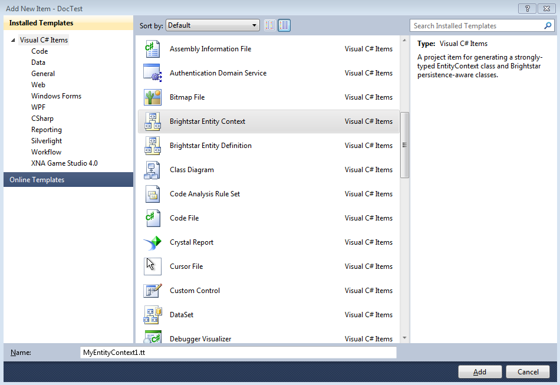The project will now show a new component has been added called “MyEntityContext.tt”. On the project references right click and add references. Browse to the [INSTALLDIR]\SDK\net40 folder and include all the ”.dll” files that are there.
In this sample we will create a data model that contains actors and films. An actor has a name and a date of birth. An actor can star in many films and each film has many actors. Films also have name property.
The BrightstarDB Entity Framework requires you to define the data model as a set of .NET interface definitions. You can either write these interfaces entirely by hand or you can use the Brightstar Entity Definition item template. Again, right-click on the solution item in the project explorer window and add a new item, this time from the displayed list choose Brightstar Entity Definition and change the name of the file to IActor.cs.
Add the following code to that file:
[Entity]
public interface IActor
{
string Name { get; set; }
DateTime DateOfBirth { get; set; }
ICollection<IFilm> Films { get; set; }
}
Then add another Brightstar Entity Definition named IFilm.cs and include the following code:
[Entity]
public interface IFilm
{
string Name { get; }
[InverseProperty("Films")]
ICollection<IActor> Actors { get; }
}
A context is a manager for objects in a store. It provides an entry point for running LINQ queries and creating new objects. The context and implementing classes are automatically generated from the interface definitions. To create a context, right click on the MyEntityContext.tt file and select “Run custom tool”. This updates the MyEntityContext.cs to contain the context class and also classes that implement the specified interfaces.
Note
The context is not automatically rebuilt on every build. After making a change to the interface definitions it is necessary to run the custom tool again.
The context can be used inside any .NET application or web service. The commented code below shows how to initialize a context and then use that context to create and persist data. It concludes by showing how to query the database using LINQ:
using System;
using System.Collections.Generic;
using System.Linq;
using System.Text;
using BrightstarDB.Client;
namespace GettingStarted
{
class Program
{
static void Main(string[] args)
{
// define a connection string
const string connectionString = "type=http;endpoint=http://localhost:8090/brightstar;storeName=Films";
// if the store does not exist it will be automatically
// created when a context is created
var ctx = new MyEntityContext(connectionString);
// create some films
var bladeRunner = ctx.Films.Create();
bladeRunner.Name = "BladeRunner";
var starWars = ctx.Films.Create();
starWars.Name = "Star Wars";
// create some actors and connect them to films
var ford = ctx.Actors.Create();
ford.Name = "Harrison Ford";
ford.DateOfBirth = new DateTime(1942, 7, 13);
ford.Films.Add(starWars);
ford.Films.Add(bladeRunner);
var hamill = ctx.Actors.Create();
hamill.Name = "Mark Hamill";
hamill.DateOfBirth = new DateTime(1951, 9, 25);
hamill.Films.Add(starWars);
// save the data
ctx.SaveChanges();
// open a new context, not required
ctx = new MyEntityContext(store);
// find an actor via LINQ
ford = ctx.Actors.Where(a => a.Name.Equals("Harrison Ford")).FirstOrDefault();
var dob = ford.DateOfBirth;
// list his films
var films = ford.Films;
// get star wars
var sw = films.Where(f => f.Name.Equals("Star Wars")).FirstOrDefault();
// list actors in star wars
foreach (var actor in sw.Actors)
{
var actorName = actor.Name;
Console.WriteLine(actorName);
}
Console.ReadLine();
}
}
}
Optimistic Locking is a way of handling concurrency control, meaning that multiple transactions can complete without affecting each other. If Optimistic Locking is turned on, then when a transaction tries to save data to the store, it first checks that the underlying data has not been modified by a different transaction. If it finds that the data has been modified, then the transaction will fail to complete.
BrightstarDB has the option to turn on optimistic locking when connecting to the store. This is done by setting the enableOptimisticLocking flag when opening a context such as below:
ctx = new MyEntityContext(connectionString, true);
var newFilm = ctx.Films.Create();
ctx.SaveChanges();
var newFilmId = newFilm.Id;
//use optimistic locking when creating a new context
var ctx1 = new MyEntityContext(connectionString, true);
var ctx2 = new MyEntityContext(connectionString, true);
//create a film in the first context
var film1 = ctx1.Films.Where(f => f.Id.Equals(newFilmId)).FirstOrDefault();
Console.WriteLine("First context has film with ID '{0}'", film1.Id);
//create a film in the second context
var film2 = ctx2.Films.Where(f => f.Id.Equals(newFilmId)).FirstOrDefault();
Console.WriteLine("Second context has film with ID '{0}'", film2.Id);
//attempt to change the data from both contexts
film1.Name = "Raiders of the Lost Ark";
film2.Name = "American Graffiti";
//save the data to the store
try
{
ctx1.SaveChanges();
Console.WriteLine("Successfully updated the film to '{0}' in the store", film1.Name);
ctx2.SaveChanges();
}
catch (Exception ex)
{
Console.WriteLine("Unable to save data to the store, as the underlying data has been modified.");
}
Console.ReadLine();
Note
Optimistic Locking can also be enabled in the configuration using the BrightstarDB.EnableOptimisticLocking application setting
When enabled, query results are stored on disk until an update is made. If the same query is executed, the cached result is returned. Cached results are stored in the Windows temporary folder, and deleted when an update is made to the store.
Server side caching is enabled by default, but can be disabled by adding the appSetting below to the application configuration file:
<add key="BrightstarDB.EnableServerSideCaching" value="false" />
Note
Server side caching is not supported on BrightstarDB for Windows Phone 7.
While this is just a short introduction it has covered a lot of how BrightstarDB works. The following sections provide some more conceptual details on how the store works, more details on the Entity Framework and how to work with BrightstarDB as a triple store.
BrightstarDB makes use of connection strings for accessing both embedded and remote BrightstarDB instances. The following section describes the different connection string properties.
Type : allowed values embedded, http, tcp, and namedpipe. This indicates the type of connection to create.
StoresDirectory : value is a file system path to the directory containing all BrightstarDB data. Only valid for use with Type set to embedded.
Endpoint : a URI that points to the service endpoint for the specified remote service. Valid for http, tcp, and namedpipe
StoreName : The name of a specific store to connect to.
The following are examples of connection strings. Property value pairs are separated by ‘;’ and property names are case insensitive.:
"type=http;endpoint=http://localhost:8090/brightstar;storename=test"
"type=tcp;endpoint=net.tcp://localhost:8095/brightstar;storename=test"
"type=namedpipe;endpoint=net.pipe://localhost/brightstar;storename=test"
"type=embedded;storesdirectory=c:\\brightstar;storename=test"
BrightstarDB supports two different file formats for storing its index information. The main difference between the two formats is the way in which modified pages of the index are written to the index file.
The Append-Only format means that BrightstarDB will write modified pages to the end of the index file. This approach has a number of benefits:
- Writers never block readers, so any number of read operations (typically SPARQL queries) can be executed in parallel with updates to the index. Each reader accesses the store in the state that it was when their operation began.
- Reads can access any previous state of the store. This is because the full history of updates to pages is maintained by the store.
- Writes are faster - because they only append to the end of the file rather than needing to seek to a location within the file to be updated.
The down-side of this format is that the index file will grow not only as more data is added but also with every update operation applied to the store. BrightstarDB does provide a way to truncate a store to just its latest state, removing all the previous historical page states so this operation executed periodically can help to keep the file size under control.
In general the Append-Only format is recommended for most systems as long as disk space is not constrained.
The Rewriteable store format manages an active and a shadow copy of each page in the index. Writes are directed to the shadow copy while readers can access the current committed state of the store by reading from the active copy. On a commit, the shadow copy becomes the active and vice-versa. This approach keeps file size under control as changes to an index page are always written to one of the two copies of the page. However this format has some disadvantages compared to the append-only store.
- Readers that take a long time to complete can get blocked by writers. In general if a reader completes in the time taken for a write to complete, the two operations can execute in parallel, however in the case that a reader requires access to the store across two successive reads, there is the potential that index pages could be modified. To avoid inconsistent results due to dirty reads, when a reader detects this it will automatically retry its current operation. This means that in stores where there are frequent, small updates readers can potentially be blocked for a long time as new writes keep forcing the read operation to be retried.
- Write operations can be a bit slower - this is because pages are written to a fixed location within the index file, requiring a disk seek before each page write.
In general the Rewritable store format is recommended for embedded applications; for mobile devices that have space constraints to consider; or for server applications that are only required to support infrequent and/or large updates.
The persistence type to use for a store must be specified when the store is created and cannot be changed after the store has been created. The default persistence type is configured in the application configuration file for the application (or the web.config for web applications). To configure the default, you must add an entry to the appSetting section of the application configuration file with the key BrightstarDB.PersistenceType and the value appendonly for an Append-Only store or rewrite for a Rewriteable store (in both cases the values are case-insensitive).
It is also possible to override the default persistence type at runtime by calling the appropriate CreateStore() operation on the BrighstarDB service client API. If no default value is defined in the application configuration file and no override value is passed to the CreateStore() method, the default persistence type used by BrightstarDB is the Append-Only persistence type.
All samples can be found in [INSTALLDIR]\Samples. Some samples are written to run against a local BrightstarDB service. These samples only need editing if you want to run them against BrightstarDB running on a different machine or running on a non-default port. This is achieved by altering the BrightstarDB.ConnectionString property in the web.config file of the sample.
The BrightstarDB Entity Framework is the main way of working with BrightstarDB instances. For those of you wanting to work with the underlying RDF directly please see the section on RDF Client API. BrightstarDB allows developers to define a data model using .NET interface definitions. BrightstarDB tools introspect these definitions to create concrete classes that can be used to create, and update persistent data. If you haven’t read the Getting Started section then we recommend that you do. The sample provided there covers most of what is required for creating most data models. The following sections in the developer guide provide more in-depth explanation of how things work along with more complex examples.
The BrightstarDB Entity Framework tooling is very simple to use. This guide shows how to get going, the rest of this section provides more in-depth information.
The process of using the Entity Framework is to:
- Include the BrightstarDB Entity Context item into a project.
- Define the interfaces for the data objects that should be persistent.
- Run the custom tool on the Entity Context text template file.
- Use the generated context to create, query or get and modify objects.
Including the BrightstarDB Entity Context
The Brightstar Entity Context is a text template that when run introspects the other code elements in the project and generates a number of classes and a context in a single file that can be found under the context file in Visual Studio. To add a new BrightstarEntityContext add a new item to the project. Locate the item in the list called Brightstar Entity Context, rename it if required, and add to the current project.
Define Interfaces
Interfaces are used to define a data model contract. Only interfaces marked with the Entity attribute will be processed by the text template. The following interfaces define a model that captures the idea of people working for an company.:
[Entity]
public interface IPerson
{
string Name { get; set; }
DateTime DateOfBirth { get; set; }
string CV { get; set; }
ICompany Employer { get; set; }
}
[Entity]
public interface ICompany
{
string Name { get; set; }
[InverseProperty("Employer")]
ICollection<IPerson> Employees { get; }
}
Including a Brightstar Entity Definition Item
One quick way to include the outline of a BrightstarDB entity in a project is to right click on the project in the solution explorer and click Add New Item. Then select the Brightstar Entity Definition from the list and update the name.
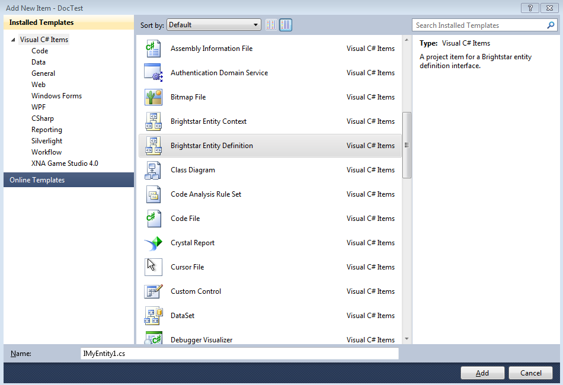This will add the following code file into the project.:
[Entity]
public interface IMyEntity1
{
/// <summary>
/// Get the persistent identifier for this entity
/// </summary>
string Id { get; }
// TODO: Add other property references here
}
Run the MyEntityContext.tt Custom Tool
To ensure that the generated classes are up to date right click on the .tt file in the solution explorer and select Run Custom Tool. This will ensure that the all the annotated interfaces are turned into concrete classes.
Note
The custom tool is not run automatically on every rebuild so after changing an interface remember to run it.
Using a Context
A context can be thought of as a connection to a BrightstarDB instance. It provides access to the collections of domain objects defined by the interfaces. It also tracks all changes to objects and is responsible for executing queries and committing transactions.
A context can be opened with a connection string. If the store named does not exist it will be created. See the connection strings section for more information on allowed configurations. The following code opens a new context connecting to an embedded store:
var dataContext = new MyEntityContext("Type=embedded;StoresDirectory=c:\\brightstardb;StoreName=test");
The context exposes a collection for each entity type defined. For the types we defined above the following collections are exposed on a context:
var people = dataContext.Persons;
var companies = dataContext.Companies;
Each of these collections are in fact IQueryable and as such support LINQ queries over the model. To get an entity by a given property the following can be used:
var brightstardb = dataContext.Companies.Where(
c => c.Name.Equals("BrightstarDB")).FirstOrDefault();
Once an entity has been retrieved it can be modified or related entities can be fetched:
// fetching employees
var employeesOfBrightstarDB = brightstardb.Employees;
// update the company
brightstardb.Name = "BrightstarDB";
New entities can be created either via the main collection or by using the new keyword and attaching the object to the context:
// creating a new entity via the context collection
var bob = dataContext.Persons.Create();
bob.Name = "bob";
// or created using new and attached to the context
var bob = new Person() { Name = "Bob" };
dataContext.Persons.Add(bob);
Once a new object has been created it can be used in relationships with other objects. The following adds a new person to the collection of employees. The same relationship could also have been created by setting the Employer property on the person:
// Adding a new relationship between entities
var bob = dataContext.Persons.Create();
bob.Name = "bob";
brightstardb.Employees.Add(bob);
// The relationship can also be defined from the 'other side'.
var bob = dataContext.Persons.Create();
bob.Name = "bob";
bob.Employer = brightstardb;
Saving the changes that have occurred is easily done by calling a method on the context:
dataContext.SaveChanges();
The BrightstarDB entity framework relies on a few annotation types in order to accurately express a data model. This section describes the different annotations and how they should be used. The only required attribute annotation is Entity. All other attributes give different levels of control over how the object model is mapped to RDF.
BrightstarDB makes use of URIs to identify class types and property types. These URI values can be added on each property but to improve clarity and avoid mistakes it is possible to configure a base URI that is then used by all attributes. It is also possible to define models that do not have this attribute set.
The type identifier prefix can be set in the AssemblyInfo.cs file. The example below shows how to set this configuration property:
[assembly: TypeIdentifierPrefix("http://www.mydomain.com/types/")]
The entity attribute is used to indicate that the annotated interface should be included in the generated model. Optionally, a full URI or a URI postfix can be supplied that defines the identity of the class. The following examples show how to use the attribute. The example with just the value ‘Person’ uses a default prefix if one is not specified as described above:
// example 1.
[Entity]
public interface IPerson { ... }
// example 2.
[Entity("Person")]
public interface IPerson { ... }
// example 3.
[Entity("http://xmlns.com/foaf/0.1/Person")]
public interface IPerson { ... }
Example 3. above can be used to map .NET models onto existing RDF vocabularies. This allows the model to create data in a given vocabulary but it also allows models to be mapped onto existing RDF data.
The Identity property can be used to get and set the underlying identity of an Entity. The following example shows how this is defined:
// example 1.
[Entity("Person")]
public interface IPerson {
string Id { get; }
}
No annotation is required. It is also acceptable for the property to be called ID, {Type}Id or {Type}ID where {Type} is the name of the type. E.g: PersonId or PersonID.
Id property values are URIs, but in some cases it is necessary to work with simpler string values such as GUIDs or numeric values. To do this the Id property can be decorated with the identifier attribute. The identifier attribute requires a string property that is the identifier prefix - this can be specified either as a URI string or as {prefix}:{rest of URI} where {prefix} is a namespace prefix defined by the Namespace Declaration Attribute (see below):
// example 1.
[Entity("Person")]
public interface IPerson {
[Identifier("http://www.mydomain.com/people/")]
string Id { get; }
}
// example 2.
[Entity]
public interface ISkill {
[Identifier("ex:skills#")]
string Id {get;}
}
// NOTE: For the above to work there must be an assembly attribute declared like this:
[assembly:NamespaceDeclaration("ex", "http://example.org/")]
Any .NET property with a getter or setter is automatically included in the generated type, no attribute annotation is required for this:
// example 1.
[Entity("Person")]
public interface IPerson {
string Id { get; }
string Name { get; set; }
}
When two types reference each other via different properties that in fact reflect different sides of the same association then it is necessary to declare this explicitly. This can be done with the InverseProperty attribute. This attribute requires the name of the .NET property on the referencing type to be specified:
// example 1.
[Entity("Person")]
public interface IPerson {
string Id { get; }
ICompany Employer { get; set; }
}
[Entity("Company")]
public interface IPerson {
string Id { get; }
[InverseProperty("Employer")]
ICollection<IPerson> Employees { get; set; }
}
The above example shows that the inverse of Employees is Employer. This means that if the Employer property on P1 is set to C1 then getting C1.Employees will return a collection containing P1.
When using URIs in annotations it is cleaner if the complete URI doesn’t need to be entered every time. To support this the NamespaceDeclaration assembly attribute can be used, many times if needed, to define namespace prefix mappings. The mapping takes a short string and the URI prefix to be used.
The attribute can be used to specify the prefixes required (typically assembly attributes are added to the AssemblyInfo.cs code file in the Properties folder of the project):
[assembly: NamespaceDeclaration("foaf", "http://xmlns.com/foaf/0.1/")]
Then these prefixes can be used in property or type annotation using the CURIE syntax of {prefix}:{rest of URI}:
[Entity("foaf:Person")]
public interface IPerson { ... }
While no decoration is required to include a property in a generated class, if the property is to be mapped onto an existing RDF vocabulary then the PropertyType attribute can be used to do this. The PropertyType attribute requires a string property that is either an absolute or relative URI. If it is a relative URI then it is appended to the URI defined by the TypeIdentifierPrefix attribute or the default base type URI. Again, prefixes defined by a NamespaceDeclaration attribute can also be used:
// Example 1. Explicit type declaration
[PropertyType("http://www.mydomain.com/types/name")]
string Name { get; set; }
// Example 2. Prefixed type declaration.
// The prefix must be declared with a NamespaceDeclaration attribute
[PropertyType("foaf:name")]
string Name { get; set; }
// Example 3. Where "name" is appended to the default namespace
// or the one specified by the TypeIdentifierPrefix in AssemblyInfo.cs.
[PropertyType("name")]
string Name { get; set; }
Allows inverse properties to be mapped to a given RDF predicate type rather than a .NET property name. This is most useful when mapping existing RDF schemas to support the case where the .NET data-binding only requires the inverse of the RDF property:
// Example 1. The following states that the collection of employees
// is found by traversing the "http://www.mydomain.com/types/employer"
// predicate from instances of Person.
[InversePropertyType("http://www.mydomain.com/types/employer")]
ICollection<IPerson> Employees { get; set; }
Any custom attributes added to the entity interface that are not in the BrightstarDB.EntityFramework namespace will be automatically copied through into the generated class. This allows you to easily make use of custom attributes for validation, property annotation and other purposes.
As an example, the following interface code:
[Entity("http://xmlns.com/foaf/0.1/Person")]
public interface IFoafPerson : IFoafAgent
{
[Identifier("http://www.networkedplanet.com/people/")]
string Id { get; }
[PropertyType("http://xmlns.com/foaf/0.1/nick")]
[DisplayName("Also Known As")]
string Nickname { get; set; }
[PropertyType("http://xmlns.com/foaf/0.1/name")]
[Required]
[CustomValidation(typeof(MyCustomValidator), "ValidateName",
ErrorMessage="Custom error message")]
string Name { get; set; }
}
would result in this generated class code:
public partial class FoafPerson : BrightstarEntityObject, IFoafPerson
{
public FoafPerson(BrightstarEntityContext context, IDataObject dataObject) : base(context, dataObject) { }
public FoafPerson() : base() { }
public System.String Id { get {return GetIdentity(); } set { SetIdentity(value); } }
#region Implementation of BrightstarDB.Tests.EntityFramework.IFoafPerson
[System.ComponentModel.DisplayNameAttribute("Also Known As")]
public System.String Nickname
{
get { return GetRelatedProperty<System.String>("Nickname"); }
set { SetRelatedProperty("Nickname", value); }
}
[System.ComponentModel.DataAnnotations.RequiredAttribute]
[System.ComponentModel.DataAnnotations.CustomValidationAttribute(typeof(MyCustomValidator),
"ValidateName", ErrorMessage="Custom error message")]
public System.String Name
{
get { return GetRelatedProperty<System.String>("Name"); }
set { SetRelatedProperty("Name", value); }
}
#endregion
}
It is also possible to add custom attributes to the generated entity class itself. Any custom attributes that are allowed on both classes and interfaces can be added to the entity interface and will be automatically copied through to the generated class in the same was as custom attributes on properties. However, if you need to use a custom attribute that is allowed on a class but not on an interface, then you must use the BrightstarDB.EntityFramework.ClassAttribute attribute. This custom attribute can be added to the entity interface and allows you to specify a different custom attribute that should be added to the generated entity class. When using this custom attribute you should ensure that you either import the namespace that contains the other custom attribute or reference the other custom attribute using its fully-qualified type name to ensure that the generated class code compiles successfully.
For example, the following interface code:
[Entity("http://xmlns.com/foaf/0.1/Person")]
[ClassAttribute("[System.ComponentModel.DisplayName(\\"Person\\")]")]
public interface IFoafPerson : IFoafAgent
{
// ... interface definition here
}
would result in this generated class code:
[System.ComponentModel.DisplayName("Person")]
public partial class FoafPerson : BrightstarEntityObject, IFoafPerson
{
// ... generated class code here
}
Note that the DisplayName custom attribute is referenced using its fully-qualified type name (System.ComponentModel.DisplayName), as the generated context code will not include a using System.ComponentModel; namespace import. Alternatively, this interface code would also generate class code that compiles correctly:
using System.ComponentModel;
[Entity("http://xmlns.com/foaf/0.1/Person")]
[ClassAttribute("[DisplayName(\\"Person\\")]")]
public interface IFoafPerson : IFoafAgent
{
// ... interface definition here
}
This section describes how to model common patterns using BrightstarDB Entity Framework. It covers how to define one-to-one, one-to-many, many-to-many and reflexive relationships.
Examples of these relationship patterns can be found in the Tweetbox sample.
Entities can have one-to-one relationships with other entities. An example of this would be the link between a user and a the authorization to another social networking site. The one-to-one relationship would be described in the interfaces as follows:
[Entity]
public interface IUser {
...
ISocialNetworkAccount SocialNetworkAccount { get; set; }
...
}
[Entity]
public interface ISocialNetworkAccount {
...
[InverseProperty("SocialNetworkAccount")]
IUser TwitterAccount { get; set; }
...
}
A User entity can be modeled to have a one-to-many relationship with a set of Tweet entities, by marking the properties in each interface as follows:
[Entity]
public interface ITweet {
...
IUser Author { get; set; }
...
}
[Entity]
public interface IUser {
...
[InverseProperty("Author")]
ICollection<ITweet> Tweets { get; set; }
...
}
The Tweet entity can be modeled to have a set of zero or more Hash Tags. As any Hash Tag entity could be used in more than one Tweet, this uses a many-to-many relationship pattern:
[Entity]
public interface ITweet {
...
ICollection<IHashTag> HashTags { get; set; }
...
}
[Entity]
public interface IHashTag {
...
[InverseProperty("HashTags")]
ICollection<ITweet> Tweets { get; set; }
...
}
A reflexive relationship (that refers to itself) can be defined as in the example below:
[Entity]
public interface IUser {
...
ICollection<IUser> Following { get; set; }
[InverseProperty("Following")]
ICollection<IUser> Followers { get; set; }
...
}
The classes generated by the BrightstarDB Entity Framework deal with data and data persistence. However, most applications require these classes to have behaviour. All generated classes are generated as .NET partial classes. This means that another file can contain additional method definitions. The following example shows how to add additional methods to a generated class.
Assume we have the following interface definition:
[Entity]
public interface IPerson {
string Id { get; }
string FirstName { get; set; }
string LastName { get; set; }
}
To add custom behaviour the new method signature should first be added to the interface. The example below shows the same interface but with an added method signature to get a user’s full name:
[Entity]
public interface IPerson {
string Id { get; }
string FirstName { get; set; }
string LastName { get; set; }
// new method signature
string GetFullName();
}
After running the custom tool on the EntityContext.tt file there is a new class called Person. To add additional methods add a new .cs file to the project and add the following class declaration:
public partial class Person {
public string GetFullName() {
return FirstName + " " + LastName;
}
}
The new partial class implements the additional method declaration and has access to all the data properties in the generated class.
The Entity Framework provides the option to enable optimistic locking when working with the store. Optimistic locking uses a well-known version number property (the property predicate URI is http://www.brightstardb.com/.well-known/model/version) to track the version number of an entity, when making an update to an entity the version number is used to determine if another client has concurrently updated the entity. If this is detected, it results in an exception of the type BrightstarDB.Client.TransactionPreconditionsFailedException being raised.
Optimistic locking can be enabled either through the connection string (giving the user control over whether or not optimistic locking is enabled) or through code (giving the control to the programmer).
To enable optimistic locking in a connection string, simply add “optimisticLocking=true” to the connection string. e.g.
type=http;endpoint=http://localhost:8090/brightstar;storeName=myStore;optimisticLocking=true
To enable optimistic locking from code, use the optional optimisticLocking parameter on the constructor of the context class e.g.:
var myContext = new MyEntityContext(connectionString, true);
Note
The programmatic setting always overrides the setting in the connection string - this gives the programmer final control over whether optimistic locking is used. The programmer can also prevent optimistic locking from being used by passing false as the value of the optimisticLocking parameter of the constructor of the context class.
Optimistic locking errors only occur when the SaveChanges() method is called on the context class. The error is notified by raising an exception of the type BrightstarDB.Client.TransactionPreconditionsFailedException. When this exception is caught by your code, you have two basic options to choose from. You can apply each of these options separately to each object modified by your update.
- Attempt the save again but first update the local context object with data from the server. This will save all the changes you have made EXCEPT for those that were detected on the server. This is the “store wins” scenario.
- Attempt the save again, but first update only the version numbers of the local context object with data from the server. This will keep all the changes you have made, overwriting any concurrent changes that happened on the server. This is the “client wins” scenario.
To attempt the save again, you must first call the Refresh() method on the context object. This method takes two paramters - the first parameter specifies the mode for the refresh, this can either be RefreshMode.ClientWins or RefreshMode.StoreWins depending on the scenario to be applied. The second parameter is the entity or collection of entities to which the refresh is to be applied. You apply different refresh strategies to different entities within the same update if you wish. Once the conflicted entities are refreshed, you can then make a call to the SaveChanges() method of the context once more. The code sample below shows this in outline:
try
{
myContext.SaveChanges();
}
catch(TransactionPreconditionsFailedException)
{
// Refresh the conflicted object(s) - in this case with the StoreWins mode
myContext.Refresh(RefreshMode.StoreWins, conflictedEntity);
// Attempt the save again
myContext.SaveChanges();
}
Note
On stores with a high degree of concurrent updates it is possible that the second call to SaveChanges() could also result in an optimistic locking error because objects have been further modified since the initial optimistic locking failure was reported. Production code for highly concurrent environments should be written to handle this possibility.
The LINQ query processor in BrightstarDB has some restrictions, but supports the most commonly used core set of LINQ query methods. The following table lists the supported query methods. Unless otherwise noted the indexed variant of LINQ query methods are not supported.
| Method | Notes |
|---|---|
| Any | Supported as first result operator. Not supported as second or subsequent result operator |
| All | Supported as first result operator. Not supported as second or subsequent result operator |
| Average | Supported as first result operator. Not supported as second or subsequent result operator. |
| Cast | Supported for casting between Entity Framework entity types only |
| Contains | Supported for literal values only |
| Count | Supported with or without a Boolean filter expression. Supported as first result operator. Not supported as second or subsequent result operator. |
| Distinct | Supported for literal values. For entities Distinct() is supported but only to eliminate duplicates of the same Id any override of .Equals on the entity class is not used. |
| First | Supported with or without a Boolean filter expression |
| LongCount | Supported with or without a Boolean filter expression. Supported as first result operator. Not supported as second or subsequent result operator. |
| Max | Supported as first result operator. Not supported as second or subsequent result operator. |
| Min | Supported as first result operator. Not supported as second or subsequent result operator. |
| OfType<TResult> | Supported only if TResult is an Entity Framework entity type |
| OrderBy | |
| OrderByDescending | |
| Select | |
| SelectMany | |
| Single | Supported with or without a Boolean filter expression |
| SingleOrDefault | Supported with or without a Boolean filter expression |
| Skip | |
| Sum | Supported as first result operator. Not supported as second or subsequent result operator. |
| Take | |
| ThenBy | |
| ThenByDescending | |
| Where |
In general, the translation of LINQ to SPARQL cannot translate methods on .NET datatypes into functionally equivalent SPARQL. However we have implemented translation of a few commonly used String, Math and DateTime methods as listed in the following table.
The return values of these methods and properties can only be used in the filtering of queries and cannot be used to modify the return value. For example you can test that foo.Name.ToLower().Equals("somestring"), but you cannot return the value foo.Name.ToLower().
| .NET function | SPARQL Equivalent |
|---|---|
| String Functions | |
| p0.StartsWith(string s) | STRSTARTS(p0, s) |
| p0.StartsWith(string s, bool ignoreCase, CultureInfo culture) | REGEX(p0, “^” + s, “i”) if ignoreCase is true; STRSTARTS(p0, s) if ignoreCase is false |
| p0.StartsWith(string s, StringComparison comparisonOptions) | REGEX(p0, “^” + s, “i”) if comparisonOptions is StringComparison.CurrentCultureIgnoreCase, StringComparison.InvariantCultureIgnoreCase or StringComparison.OrdinalIgnoreCase; STRSTARTS(p0, s) otherwise |
| p0.EndsWith(string s) | STRENDS(p0, s) |
|
REGEX(p0, s + “$”, “i”) if ignoreCase is true; STRENDS(p0, s) if ignoreCase is false |
|
REGEX(p0, s + “$”, “i”) if comparisonOptions is StringComparison.CurrentCultureIgnoreCase, StringComparison.InvariantCultureIgnoreCase or StringComparison.OrdinalIgnoreCase; STRENDS(p0, s) otherwise |
| p0.Length | STRLEN(p0) |
| p0.Substring(int start) | SUBSTR(p0, start) |
| p0.Substring(int start, int len) | SUBSTR(p0, start, end) |
| p0.ToUpper() | UCASE(p0) |
| p0.ToLower() | LCASE(p0) |
| Date Functions | |
| p0.Day | DAY(p0) |
| p0.Hour | HOURS(p0) |
| p0.Minute | MINUTES(p0) |
| p0.Month | MONTH(p0) |
| p0.Second | SECONDS(p0) |
| p0.Year | YEAR(p0) |
| Math Functions | |
| Math.Round(decimal d) | ROUND(d) |
| Math.Round(double d) | ROUND(d) |
| Math.Floor(decimal d) | FLOOR(d) |
| Math.Floor(double d) | FLOOR(d) |
| Math.Ceiling(decimal d) | CEIL(d) |
| Math.Ceiling(decimal d) | CEIL(d) |
| Regular Expressions | |
|
REGEX(p0, expression, flags) Flags are generated from the options parameter. The supported RegexOptions are IgnoreCase, Multiline, Singleline and IgnorePatternWhitespace (or any combination of these). |
The static method Regex.IsMatch() is supported when used to filter on a string property in a LINQ query e.g.:
context.Persons.Where(p => Regex.IsMatch(p.Name, "^a.*e$", RegexOptions.IgnoreCase));
However, please note that the regular expression options that can be used is limited to a combination of IgnoreCase, Multiline, Singleline and IgnorePatternWhitespace.
The Open Data Protocol (OData) is an open web protocol for querying data. An OData provider can be added to BrightstarDB Entity Framework projects to allow OData consumers to query the underlying data in the store.
Note
Identifier Attributes must exist on any BrightstarDB entity interfaces in order to be processed by an OData consumer
For more details on how to add a BrightstarDB OData service to your projects, read Adding Linked Data Support in the MVC Nerd Dinner samples chapter
The OData v2 protocol implemented by BrightstarDB does not support properties that contain a collection of literal values. This means that BrightstarDB entity properties that are of type ICollection<literal type> are not supported. Any properties of this type will not be readable via the OData service.
An OData provider connected to the BrightstarDB Entity Framework as a few restrictions on how it can be queried.
Expand
- Second degree expansions are not currently supported. e.g. Department('5598556a-671a-44f0-b176-502da62b3b2f')?$expand=Persons/Skills
Filtering
- The arithmetic filter Mod is not supported
- The string filter functions int indexof(string p0, string p1), string trim(string p0) and trim(string p0, string p1) are not supported.
- The type filter functions bool IsOf(type p0) and bool IsOf(expression p0, type p1) are not supported.
Format
Microsoft WCF Data Services do not currently support the $format query option. To return OData results formatted in JSON, the accept headers can be set in the web request sent to the OData service.
The generated EntityFramework context class exposes an event, SavingChanges. This event is raised during the processing of the SaveChanges() method before any data is committed back to the Brightstar store. The event sender is the context class itself and in the event handler you can use the TrackedObjects property of the context class to iterate through all entities that the context class has retrieved from the BrightstarDB store. Entities expose an IsModified property which can be used to determine if the entity has been newly created or locally modified. The sample code below uses this to update a Created and LastModified timestamp on any entity that implements the ITrackable interface.:
private static void UpdateTrackables(object sender, EventArgs e)
{
// This method is invoked by the context.
// The sender object is the context itself
var context = sender as MyEntityContext;
// Iterate through just the tracked objects that implement the ITrackable interface
foreach(var t in context.TrackedObjects
.Where(x=>x is ITrackable && x.IsModified)
.Cast<ITrackable>())
{
// If the Created property is not yet set, it will have DateTime.MinValue as its defaulft value
// We can use this fact to determine if the Created property needs setting.
if (t.Created == DateTime.MinValue) t.Created = DateTime.Now;
// The LastModified property should always be updated
t.LastModified = DateTime.Now;
}
}
Note
The source code for this example can be found in [INSTALLDIR]\Samples\EntityFramework\EntityFrameworkSamples.sln
The classes generated by the Entity Framework provide support for tracking local changes. All generated entity classes implement the System.ComponentModel.INotifyPropertyChanged interface and fire a notification event any time a property with a single value is modified. All collections exposed by the generated classes implement the System.Collections.Specialized.INotifyCollectionChanged interface and fire a notification when an item is added to or removed from the collection or when the collection is reset.
There are a few points to note about using these features with the Entity Framework:
Firstly, although the generated classes implement the INotifyPropertyChanged interface, your code will typically use the interfaces. To attach a handler to the PropertyChanged event, you need an instance of INotifyPropertyChanged in your code. There are two ways to achieve this - either by casting or by adding INotifyPropertyChanged to your entity interface. If casting you will need to write code like this:
// Get an entity to listen to
var person = _context.Persons.Where(x=>x.Name.Equals("Fred")).FirstOrDefault();
// Attach the NotifyPropertyChanged event handler
(person as INotifyPropertyChanged).PropertyChanged += HandlePropertyChanged;
Alternatively it can be easier to simply add the INotifyPropertyChanged interface to your entity interface like this:
[Entity]
public interface IPerson : INotifyPropertyChanged
{
// Property definitions go here
}
This enables you to then write code without the cast:
// Get an entity to listen to
var person = _context.Persons.Where(x=>x.Name.Equals("Fred")).FirstOrDefault();
// Attach the NotifyPropertyChanged event handler
person.PropertyChanged += HandlePropertyChanged;
When tracking changes to collections you should also be aware that the dynamically loaded nature of these collections means that sometimes it is not possible for the change tracking code to provide you with the object that was removed from a collection. This will typically happen when you have a collection one one entity that is the inverse of a collection or property on another entity. Updating the collection at one end will fire the CollectionChanged event on the inverse collection, but if the inverse collection is not yet loaded, the event will be raised as a NotifyCollectionChangedAction.Reset type event, rather than a NotifyCollectionChangedAction.Remove event. This is done to avoid the overhead of retrieving the removed object from the data store just for the purpose of raising the notification event.
Finally, please note that event handlers are attached only to the local entity objects, the handlers are not persisted when the context changes are saved and are not available to any new context’s you create - these handlers are intended only for tracking changes made locally to properties in the context before a SaveChanges() is invoked. The properties are also useful for data binding in applications where you want the user interface to update as the properties are modified.
The following samples provide detailed information on how to build applications using BrightstarDB. If there are classes of applications for which you would like to see other tutorials please let us know.
Note
The source code for this example can be found in [INSTALLDIR]\Samples\EntityFramework\EntityFrameworkSamples.sln
The TweetBox sample is a simple console application that shows the speed in which BrightstarDB can load content. The aim is not to create a Twitter style application, but to show how objects with various relationships to one another are loading quickly, in a structure that will be familiar to developers.
The model consists of 3 simple interfaces: IUser, ITweet and IHashTag. The relationships between the interfaces mimic the structure on Twitter, in that Users have a many to many relationship with other Users (or followers), and have a one to many relationship with Tweets. The tweets have a many to many relationship with Hashtags, as a Tweet can have zero or more Hashtags, and a Hashtag may appear in more than one Tweet.
IUser
The IUser interface represents a user on Twitter, with simple string properties for the username, bio (profile text) and date of registration. The ‘Following’ property shows the list of users that this user follows, the other end of this relationship is shown in the ‘Followers’ property, this is marked with the ‘InverseProperty’ attribute to tell BrightstarDB that Followers is the other end of the Following relationship. The final property is a list of tweets that the user has authored, this is the other end of the relationship from the ITweet interface (described below):
[Entity]
public interface IUser
{
string Id { get; }
string Username { get; set; }
string Bio { get; set; }
DateTime DateRegistered { get; set; }
ICollection<IUser> Following { get; set; }
[InverseProperty("Following")]
ICollection<IUser> Followers { get; set; }
[InverseProperty("Author")]
ICollection<ITweet> Tweets { get; set; }
}
ITweet
The ITweet interface represents a tweet on twitter, and has simple properties for the tweet content and the date and time it was published. The Tweet has an IUser property (‘Author’) to relate it to the user who wrote it (the other end of this relationship is described above). ITweet also contains a collection of Hashtags that appear in the tweet (described below):
[Entity]
public interface ITweet
{
string Id { get; }
string Content { get; set; }
DateTime DatePublished { get; set; }
IUser Author { get; set; }
ICollection<IHashTag> HashTags { get; set; }
}
IHashTag
A hashtag is a keyword that is contained in a tweet. The same hashtag may appear in more than one tweet, and so the collection of Tweets is marked with the ‘InverseProperty’ attribute to show that it is the other end of the collection of HashTags in the ITweet interface:
[Entity]
public interface IHashTag
{
string Id { get; }
string Value { get; set; }
[InverseProperty("HashTags")]
ICollection<ITweet> Tweets { get; set; }
}
The BrightstarDB context can be initialised using a connection string:
var connectionString = "Type=http;endpoint=http://localhost:8090/brightstar;StoreName=Tweetbox";
var context = new TweetBoxContext(connectionString);
If you have added the connection string into the Config file:
<add key="BrightstarDB.ConnectionString" value="Type=http;endpoint=http://localhost:8090/brightstar;StoreName=Tweetbox" />
then you can initialise the content with a simple:
var context = new TweetBoxContext();
For more information about connection strings, please read the “Connection Strings” topic.
Method 1:
var jo = context.Users.Create();
jo.Username = "JoBloggs79";
jo.Bio = "A short sentence about this user";
jo.DateRegistered = DateTime.Now;
context.SaveChanges();
Method 2:
var jo = new User {
Username = "JoBloggs79",
Bio = "A short sentence about this user",
DateRegistered = DateTime.Now
};
context.Users.Add(jo);
context.SaveChanges();
The following code snippets show the creation of relationships between entities by simply setting properties.
Users to Users:
var trevor = context.Users.Create();
trevor.Username = "TrevorSims82";
trevor.Bio = "A short sentence about this user";
trevor.DateRegistered = DateTime.Now;
trevor.Following.Add(jo);
context.SaveChanges();
Tweets to Tweeter:
var tweet = context.Tweets.Create();
tweet.Content = "My first tweet";
tweet.DatePublished = DateTime.Now;
tweet.Tweeter = trevor;
context.SaveChanges();
Tweets to HashTags::
var nosql = context.HashTags.Where(ht => ht.Value.Equals("nosql").FirstOrDefault();
if (nosql == null)
{
nosql = context.HashTags.Create();
nosql.Value = "nosql";
}
var brightstardb = context.HashTags.Where(ht => ht.Value.Equals("brightstardb").FirstOrDefault();
if (brightstardb == null)
{
brightstardb = context.HashTags.Create();
brightstardb.Value = "brightstardb";
}
var tweet2 = context.Tweets.Create();
tweet.Content = "New fast, scalable NoSQL database for the .NET platform";
tweet.HashTags.Add(nosql);
tweet.HashTags.Add(brightstar);
tweet.DatePublished = DateTime.Now;
tweet.Tweeter = trevor;
context.SaveChanges();
In order to show the speed at which objects can be created, persisted and index in BrightstarDB, the console application creates 100 users, each with 500 tweets. Each of those tweets has 2 hashtags (chosen from a set of 10,000 hash tags).
- Creates 100 users
- Creates 10,000 hashtags
- Saves the users and hashtags to the database
- Loops through the existing users and adds followers and tweets (each tweet has 2 random hashtags)
- Saves the changes back to the store
- Writes out the time taken to the console
Note
The source code for this example can be found in the solution [INSTALLDIR]\Samples\NerdDinner\BrightstarDB.Samples.NerdDinner.sln
To demonstrate the ease of using BrightstarDB with ASP.NET MVC, we will use the well-known “Nerd Dinner” tutorial used by .NET Developers when they first learn MVC. We won’t recreate the full Nerd Dinner application, but just a portion of it, to show how to use BrightstarDB for code-first data persistence, and show how it not only matches the ease of creating applications from scratch, but surpasses Entity Framework by introducing pain free model changes (more on that later). The Brightstar.NerdDinner sample application shows a simple model layer, using ASP.NET MVC4 for the CRUD application and BrightstarDB for data storage. In later sections we will extend this basic functionality with support for linked data in the form of both OData and SPARQL query support and we will show how to use BrightstarDB as the basis for a .NET custom membership and role provider.
This tutorial is quite long, but is broken up into a number of separate sections each of which you can follow along with in code, or you can refer to the complete sample application which can be found in [INSTALLDIR]\Samples\NerdDinner.
- Creating The Basic Data Model - creates the initial application and code-first data model
- Creating MVC Controllers and Views - shows how easy it is to use this model with ASP.NET MVC4 to create web interfaces for create, update and delete (CRUD) operations.
- Applying Model Changes - shows how BrightstarDB handles changes to the code-first data model without data loss.
- Adding A Custom Membership Provider - describes how to build a ASP.NET custom membership provider that uses BrightstarDB to manage user account information.
- Adding A Custom Role Provider - builds on the custom membership provider to enable users to be assigned different roles and levels of access
- Adding Linked Data Support - extends the web application to provide a SPARQL and an ODATA query endpoint
- Consuming OData In PowerPivot - shows one way in which the OData endpoint can be used - enabling data to be retrieved into Excel.
Step 1: Create a New Empty ASP.NET MVC4 Application
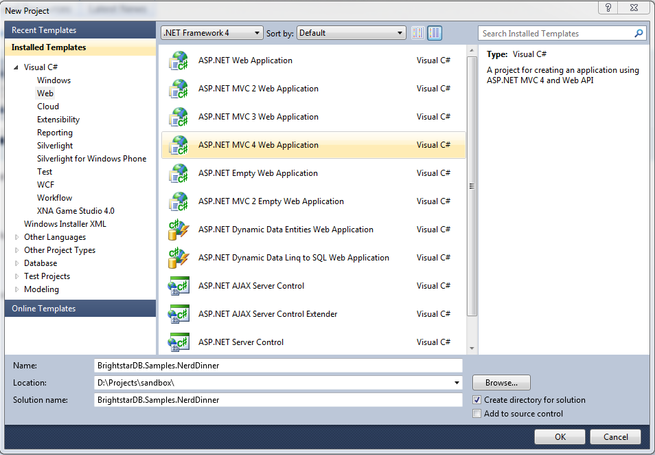Choose “ASP.NET MVC 4 Web Application” from the list of project types in Visual Studio. If you do not already have MVC 4 installed you can download it from http://www.asp.net/mvc/mvc4. You must also install the “Visual Web Developer” feature in Visual Studio to be able to open and work with MVC projects. Choose a name for your application (we are using BrightstarDB.Samples.NerdDinner), and then click OK. In the next dialog box, select “Empty” for the template type, this mean that the project will not be pre-filled with any default controllers, models or views so we can show every step in building the application. Choose “Razor” as the View Engine. Leave the “Create a unit test project” box unchecked, as for the purposes of this example project it is not needed.
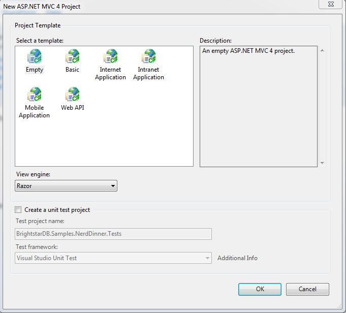Step 2: Add references to BrightstarDB
Add a reference in your project to the BrightstarDB DLL from the BrightstarDB SDK.
Step 3: Add a connection string to your BrightstarDB location
Open the web.config file in the root directory your new project, and add a connection string to the location of your BrightstarDB store. There is no setup required - you can name a store that does not exist and it will be created the first time that you try to connect to it from the application. The only thing you will need to ensure is that if you are using an HTTP, TCP or Named Pipe connection, the BrightstarDB service must be running:
<appSettings>
...
<add key="BrightstarDB.ConnectionString"
value="Type=http;endpoint=http://localhost:8090/brightstar;StoreName=NerdDinner" />
...
</appSettings>
For more information about connection strings, please read the “Connection Strings” topic.
Step 4: Add the Brightstar Entity Context into your project
Select Add > New Item on the Models folder, and select Brightstar Entity Context from the Data category. Rename it to NerdDinnerContext.tt
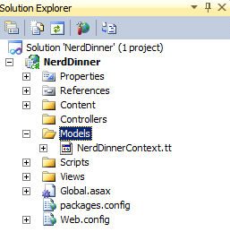Step 5: Creating the data model interfaces
BrightstarDB data models are defined by a number of standard .NET interfaces with certain attributes set. The NerdDinner model is very simple (especially for this tutorial) and only consists of a set of “Dinners” that refer to specific events that people can attend, and also a set of “RSVP”s that are used to track a person’s interest in attending a dinner.
We create the two interfaces as shown below in the Models folder of our project.
IDinner.cs:
using System;
using System.Collections.Generic;
using System.ComponentModel.DataAnnotations;
using BrightstarDB.EntityFramework;
namespace BrightstarDB.Samples.NerdDinner.Models
{
[Entity]
public interface IDinner
{
[Identifier("http://nerddinner.com/dinners/")]
string Id { get; }
[Required(ErrorMessage = "Please provide a title for the dinner")]
string Title { get; set; }
string Description { get; set; }
[Display(Name = "Event Date")]
[DataType(DataType.DateTime)]
DateTime EventDate { get; set; }
[Required(ErrorMessage = "The event must have an address.")]
string Address { get; set; }
[Required(ErrorMessage = "Please enter the name of the host of this event")]
[Display(Name = "Host")]
string HostedBy { get; set; }
ICollection<IRSVP> RSVPs { get; set; }
}
}
IRSVP.cs::
using System.ComponentModel.DataAnnotations;
using BrightstarDB.EntityFramework;
namespace BrightstarDB.Samples.NerdDinner.Models
{
[Entity]
public interface IRSVP
{
[Identifier("http://nerddinner.com/rsvps/")]
string Id { get; }
[Display(Name = "Email Address")]
[Required(ErrorMessage = "Email address is required")]
string AttendeeEmail { get; set; }
[InverseProperty("RSVPs")]
IDinner Dinner { get; set; }
}
}
By default, BrightstarDB identifier properties are automatically generated URIs that are automatically. In order to work with simpler values for our entity Ids we decorate the Id property with an identifier attribute. This adds a prefix for BrightstarDB to use when generating and querying the entity identifiers and ensures that the actual value we get in the Id property is just the part of the URI that follows the prefix, which will be a simple GUID string.
In the IRSVP interface, we add an InverseProperty attribute to the Dinner property, and set it to the name of the .NET property on the referencing type (“RSVPs”). This shows that these two properties reflect different sides of the same association. In this case the association is a one-to-many relationship (one dinner can have many RSVPs), but BrightstarDB also supports many-to-many and many-to-one relationships using the same mechanism.
We can also add other attributes such as those from the System.ComponentModel.DataAnnotations namespace to provide additional hints for the MVC framework such as marking a property as required, providing an alternative display name for forms or specifying the way in which a property should be rendered. These additional attributes are automatically added to the classes generated by the BrightstarDB Entity Framework. For more information about BrightstarDB Entity Framework attributes and passing through additional attributes, please refer to the Annotations section of the Entity Framework documentation.
Step 6: Creating a context class to handle database persistence
Right click on the Brightstar Entity Context and select Run Custom Tool. This runs the text templating tool that updates the .cs file contained within the .tt file with the most up to date persistence code needed for your interfaces. Any time you modify the interfaces that define your data model, you should re-run the text template to regenerate the context code.
We now have the basic data model for our application completed and have generated the code for creating persistent entities that match our data model and storing them in BrightstarDB. In the next step we will see how to use this data model and context in creating screens in our MVC application.
Hit F5 to start up the application in Debug mode. This opens a browser window that by default starts in the Index action of the HomeController. As we have not yet added any dinners yet, the list is empty, but we can click on Create New to go to the Create view to add some dinners.
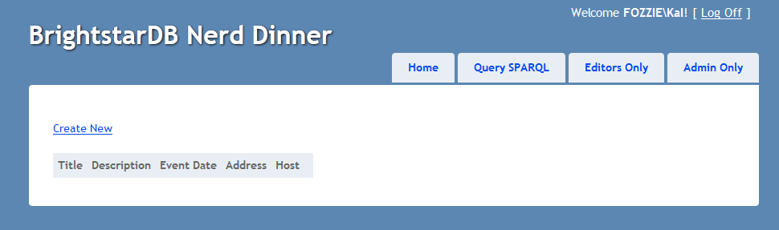Note that the custom attributes entered in the entity interface have been picked up by MVC. If you attempt to submit this form without filling in Title, Address or Host you will see the form validation errors on the page.
After entering some data we can see them in the list on the index page:
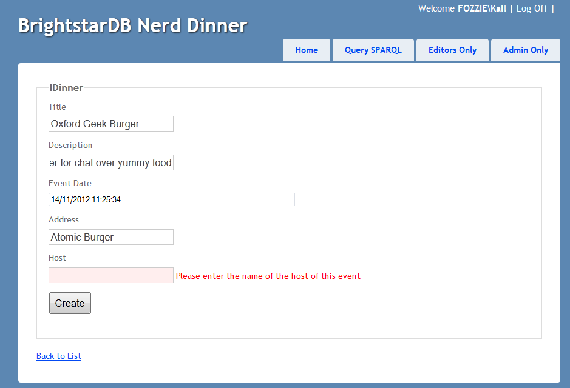We can also easily view the details of a dinner, edit the details or delete the dinner by using the links next to each item on the list.
In the previous section we created the skeleton MVC application and added to it a BrightstarDB data model for dinners and RSVPs. In this section we will start to flesh out the MVC application with some screens for data entry and display.
Right click on the controller folder and select “Add > Controller”. Name it “HomeController” and select “Controller with empty Read/Write Actions”. This adds a Controller class to the folder, with empty actions for Index(), Details(), Create(), Edit() and Delete(). This will be the main controller for all our CRUD operations.
The basic MVC4 template for these operations makes a couple of assumptions that we need to correct. Firstly, the id parameter passed in to various operations is assumed to be an int; however our BrightstarDB entities use a string value for their Id, so we must change the int id parameters to string id on the Details, Edit and Delete actions. Secondly, by default the HttpPost actions for the Create and Edit actions accept FormCollection parameters, but because we have a data model available it is easier to work with the entity class, so we will change these methods to accept our data model’s classes as parameters rather than FormCollection and let the MVC framework handle the data binding for us - for the Delete action it does not really matter as we are not concerned with the value posted back by that action in this sample application.
Before we start editing the Actions, we add the following line to the HomeController class:
public class HomeController : Controller
{
NerdDinnerContext _nerdDinners = new NerdDinnerContext();
...
}
This ensures that any action invoked on the controller can access the BrightstarDB entity framework context.
Index
This view will show a list of all dinners in the system, it’s a simple case of using LINQ to return a list of all dinners::
public ActionResult Index()
{
var dinners = from d in _nerdDinners.Dinners
select d;
return View(dinners.ToList());
}
Details
This view shows all the details of a particular dinner, so we use LINQ again to query the store for a dinner with a particular Id. Note that we have changed the type of the id parameter from int to string. The LINQ query here uses FirstOrDefault() which means that if there is no dinner with the specified ID, we will get a null value returned by the query. If that is the case, we return the user to a “404” view to display a “Not found” message in the browser, otherwise we return the default Details view.:
public ActionResult Details(string id)
{
var dinner = _nerdDinners.Dinners.FirstOrDefault(d => d.Id.Equals(id));
return dinner == null ? View("404") : View(dinner);
}
Edit
The controller has two methods to deal with the Edit action, the first handles a get request and is similar to the Details method above, but the view loads the property values into a form ready to be edited. As with the previous method, the type of the id parameter has been changed to string:
public ActionResult Edit(string id)
{
var dinner = _nerdDinners.Dinners.Where(d => d.Id.Equals(id)).FirstOrDefault();
return dinner == null ? View("404") : View(dinner);
}
The method that accept the HttpPost that is sent back after a user clicks “Save” on the view, deals with updating the property values in the store. Note that rather than receiving the id and FormsCollection parameters provided by the default scaffolding, we change this method to receive a Dinner object. The Dinner class is generated by the BrightstarDB Entity Framework from our IDinner data model interface and the MVC framework can automatically data bind the values in the edit form to a new Dinner instance before invoking our Edit method. This automatic data binding makes the code to save the edited dinner much simpler and shorter - we just need to attach the Dinner object to the _nerdDinners context and then call SaveChanges() on the context to persist the updated entity:
[HttpPost]
public ActionResult Edit(Dinner dinner)
{
if(ModelState.IsValid)
{
dinner.Context = _nerdDinners;
_nerdDinners.SaveChanges();
return RedirectToAction("Index");
}
return View();
}
Create
Like the Edit method, Create displays a form on the initial view, and then accepts the HttpPost that gets sent back after a user clicks “Save”. To make things slight easier for the user we are pre-filling the “EventDate” property with a date one week in the future:
public ActionResult Create()
{
var dinner = new Dinner {EventDate = DateTime.Now.AddDays(7)};
return View(dinner);
}
When the user has entered the rest of the dinner details, we add the Dinner object to the Dinners collection in the context and then call SaveChanges():
[HttpPost]
public ActionResult Create(Dinner dinner)
{
if(ModelState.IsValid)
{
_nerdDinners.Dinners.Add(dinner);
_nerdDinners.SaveChanges();
return RedirectToAction("Index");
}
return View();
}
Delete
The first stage of the Delete method displays the details of the dinner about to be deleted to the user for confirmation:
public ActionResult Delete(string id)
{
var dinner = _nerdDinners.Dinners.Where(d => d.Id.Equals(id)).FirstOrDefault();
return dinner == null ? View("404") : View(dinner);
}
When the user has confirmed the object is Deleted from the store:
[HttpPost, ActionName("Delete")]
public ActionResult DeleteConfirmed(string id, FormCollection collection)
{
var dinner = _nerdDinners.Dinners.FirstOrDefault(d => d.Id.Equals(id));
if (dinner != null)
{
_nerdDinners.DeleteObject(dinner);
_nerdDinners.SaveChanges();
}
return RedirectToAction("Index");
}
Now that we have filled in the logic for the actions, we can proceed to create the necessary views. These views will make use of the Microsoft JQuery Unobtrusive Validation nuget package. You can install this package through the GUI Nuget package manager or using the NuGet console command:
PM> install-package Microsoft.jQuery.Unobtrusive.Validation
This will also install the jQuery and jQuery.Validation packages that are dependencies.
Before creating specific views, we can create a common look and feel for these views by creating a _ViewStart.cshtml and a shared _Layout.cshtml. This approach also makes the Razor for the individual views simpler and easier to manage. Please refer to the sample solution for the content of these files and the 404 view that is displayed when a URL specifies an ID that cannot be resolved.
All of the views for the Home controller need to go in the Home folder under the Views folder - if it does not exist yet, create the Home folder within the Views folder of the MVC solution. Then, to Add a view, right click on the “Home” folder within “Views” and select “Add > View”. For each view we create a strongly-typed view with the appropriate scaffold template and create it as a partial view.
The Index View uses a List template, and the IDinner model:
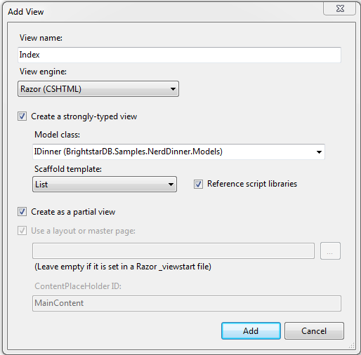Note
If the IDinner type is not displayed in the “Model class” drop-down list, this may be because Visual Studio is not aware of the type yet - to fix this, you must save and compile the solution before trying to add views.
Note
If you get an error from Visual Studio when trying to add this view, please see this blog post for a possible solution.
The Details View uses the Details template:
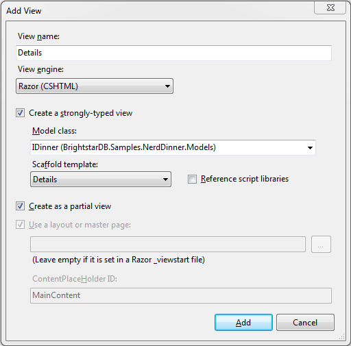The Edit View uses the Edit template and also includes script library references. You may want to modify the reference to the jquery-1.7.1.min.js script from the generated template to point to the version of jQuery installed by the validation NuGet package (this is jquery-1.4.4.min.js at the time of writing).
The Create View uses the Create template and again includes the script library references, which you should modify in the same way as you did for the Edit view.
The Delete view uses the Delete template:
Adding strongly typed views in this way pre-populates the HTML with tables, forms and text where needed to display information and gather data from the user.
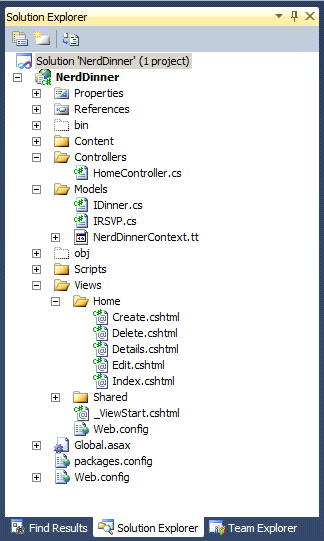We have now implemented all of the code we need to write within our Controller and Views to implement the Dinner listing and Dinner creation functionality within our web application. Running the web application for the first time should display a home page with an empty list of dinners:
Clicking on the Create New link takes you to the form for entering the details for a new dinner. Note that this form supports some basic validation through the annotation attributes we added to the model. For example the name of the dinner host is required:
Once a dinner is created it shows up in the list on the home page from where you can view details, edit or delete the dinner:
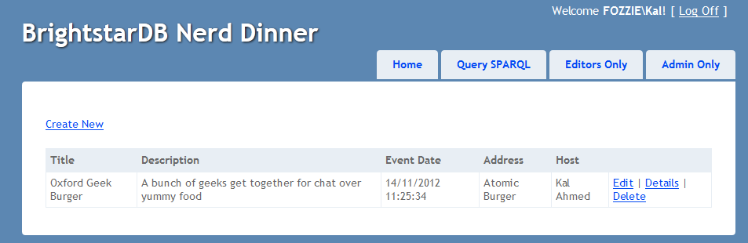However, we still have no way of registering attendees! To do that we need to add another action that will allow us to create an RSVP and attach it to a dinner.
Like the Create, Edit and Delete actions, AddAttendee will be an action with two parts to it. The first part of the action, invoked by an HTTP GET (a normal link) will display a form in which the user can enter the email address they want to use for the RSVP. The second part of the action will handle the HTTP POST generated by that form when the user submits it - this part will use the details in the form to create a new RSVP entity and connect it to the correct event. The action will be created in the Home controller, so new methods will be added to HomeController.cs.
This is the code for the first part of AddAttendee action - it is a similar pattern that we have seen else where. We retrieve the dinner entity by its ID and pass it through to the view so we can show the user some details about the dinner they have chosen to attend:
public ActionResult AddAttendee(string id)
{
var dinner = _nerdDinners.Dinners.FirstOrDefault(x => x.Id.Equals(id));
ViewBag.Dinner = dinner;
return dinner == null ? View("404") : View();
}
The view invoked by this action needs to be added to the Views/Home folder as AddAttendee.cshtml. Create a new view, named AddAttendee and strongly typed using the IDinner type but choose the Empty scaffold and check “Create as partial view” and then edit the .cshtml file like this:
@model BrightstarDB.Samples.NerdDinner.Models.IRSVP
<h3>Join A Dinner</h3>
<p>To join the dinner @ViewBag.Dinner.Title on @ViewBag.Dinner.EventDate.ToLongDateString(),
enter your email address below and click RSVP.</p>
@using(@Html.BeginForm("AddAttendee", "Home")) {
@Html.ValidationSummary(true)
@Html.Hidden("DinnerId", ViewBag.Dinner.Id as string)
<div class="editor-label">@Html.LabelFor(m=>m.AttendeeEmail)</div>
<div class="editor-field">
@Html.EditorFor(m=>m.AttendeeEmail)
@Html.ValidationMessageFor(m=>m.AttendeeEmail)
</div>
<p><input type="submit" value="Register"/></p>
}
<div>
@Html.ActionLink("Back To List", "Index")
</div>
Note the use of a hidden field in the form that carries the Dinner ID so that when we handle the POST we know which dinner to connect the response to.
This is the code to handle the second part of the action:
[HttpPost]
public ActionResult AddAttendee(FormCollection form)
{
if (ModelState.IsValid)
{
var rsvpDinnerId = form["DinnerId"];
var dinner = _nerdDinners.Dinners.FirstOrDefault(d => d.Id.Equals(rsvpDinnerId));
if (dinner != null)
{
var rsvp= new RSVP{AttendeeEmail = form["AttendeeEmail"], Dinner = dinner};
_nerdDinners.RSVPs.Add(rsvp);
_nerdDinners.SaveChanges();
return RedirectToAction("Details", new {id = rsvp.Dinner.Id});
}
}
return View();
}
Here we do not use the MVC framework to data-bind the form values to an RSVP object because it will attempt to put the ID from the URL (which is the dinner ID) into the Id field of the RSVP, which is not what we want. Instead we just get the FormCollection to allow us to retrieve the form values. The code retrieves the DinnerId from the form and uses that to get the IDinner entity from BrightstarDB. A new RSVP entity is then created using the AttendeeEmail value from the form and the dinner entity just found. The RSVP is then added to the BrightstarDB RSVPs collection and SaveChanges() is called to persist it. Finally the user is returned to the details page for the dinner.
Next, we modify the Details view so that it shows all attendees of a dinner. This is the updated CSHTML for the Details view:
@model BrightstarDB.Samples.NerdDinner.Models.IDinner
<fieldset>
<legend>IDinner</legend>
<div class="display-label">
@Html.DisplayNameFor(model => model.Title)
</div>
<div class="display-field">
@Html.DisplayFor(model => model.Title)
</div>
<div class="display-label">
@Html.DisplayNameFor(model => model.Description)
</div>
<div class="display-field">
@Html.DisplayFor(model => model.Description)
</div>
<div class="display-label">
@Html.DisplayNameFor(model => model.EventDate)
</div>
<div class="display-field">
@Html.DisplayFor(model => model.EventDate)
</div>
<div class="display-label">
@Html.DisplayNameFor(model => model.Address)
</div>
<div class="display-field">
@Html.DisplayFor(model => model.Address)
</div>
<div class="display-label">
@Html.DisplayNameFor(model => model.HostedBy)
</div>
<div class="display-field">
@Html.DisplayFor(model => model.HostedBy)
</div>
<div class="display-label">
@Html.DisplayNameFor(model=>model.RSVPs)
</div>
<div class="display-field">
@if (Model.RSVPs != null)
{
<ul>
@foreach (var r in Model.RSVPs)
{
<li>@r.AttendeeEmail</li>
}
</ul>
}
</div>
</fieldset>
<p>
@Html.ActionLink("Edit", "Edit", new { id=Model.Id }) |
@Html.ActionLink("Back to List", "Index")
</p>
Finally we modify the Index view to add an Add Attendee action link to each row in the table. This is the updated CSHTML for the Index view:
@model IEnumerable<BrightstarDB.Samples.NerdDinner.Models.IDinner>
<p>
@Html.ActionLink("Create New", "Create")
</p>
<table>
<tr>
<th>
@Html.DisplayNameFor(model => model.Title)
</th>
<th>
@Html.DisplayNameFor(model => model.Description)
</th>
<th>
@Html.DisplayNameFor(model => model.EventDate)
</th>
<th>
@Html.DisplayNameFor(model => model.Address)
</th>
<th>
@Html.DisplayNameFor(model => model.HostedBy)
</th>
<th></th>
</tr>
@foreach (var item in Model) {
<tr>
<td>
@Html.DisplayFor(modelItem => item.Title)
</td>
<td>
@Html.DisplayFor(modelItem => item.Description)
</td>
<td>
@Html.DisplayFor(modelItem => item.EventDate)
</td>
<td>
@Html.DisplayFor(modelItem => item.Address)
</td>
<td>
@Html.DisplayFor(modelItem => item.HostedBy)
</td>
<td>
@Html.ActionLink("Add Attendee", "AddAttendee", new { id=item.Id }) |
@Html.ActionLink("Edit", "Edit", new { id=item.Id }) |
@Html.ActionLink("Details", "Details", new { id=item.Id }) |
@Html.ActionLink("Delete", "Delete", new { id=item.Id })
</td>
</tr>
}
</table>
Now we can use the Add Attendee link on the home page to register attendance at an event:
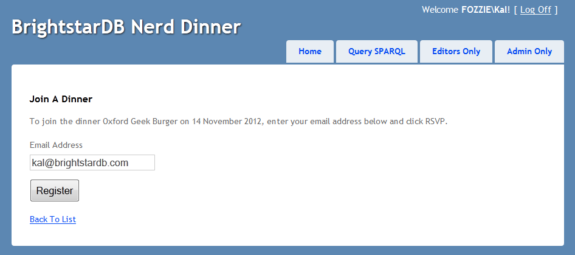And we can then see this registration on the event details page:
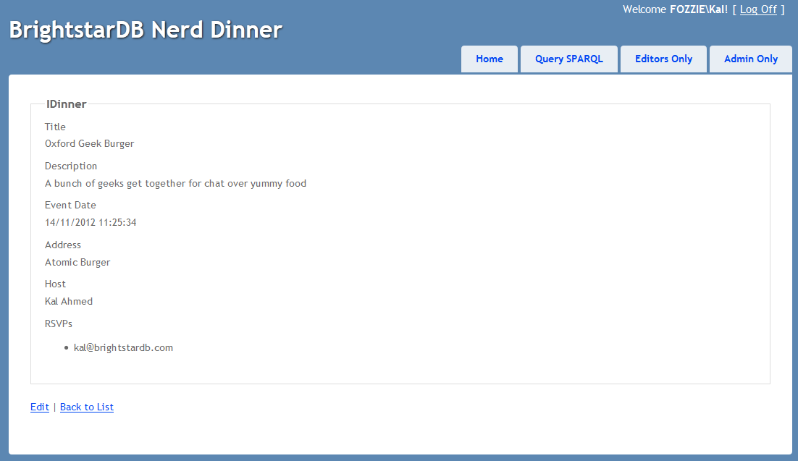Change during development happens and many times, changes impact the persistent data model. Fortunately it is easy to modify the persistent data model with BrightstarDB.
As an example we are going to add the requirement for dinners to have a specific City field (perhaps to allow grouping of dinners by the city the occur in for example).
The first step is to modify the IDinner interface to add a City property:
[Entity]
public interface IDinner
{
[Identifer("http://nerddinner.com/dinners#")]
string Id { get; }
string Title { get; set; }
string Description { get; set; }
DateTime EventDate { get; set; }
string Address { get; set; }
string City { get; set; }
string HostedBy { get; set; }
ICollection<IRSVP> RSVPs { get; set; }
}
Because this change modifies an entity interface, we need to ensure that the generated context classes are also updated. To update the context, right click on the NerdDinnerContext.tt and select “Run Custom Tool”
That is all that needs to be done from a BrightstarDB point of view! The City property is now assignable on all new and existing Dinner entities and you can write LINQ queries that make use of the City property. Of course, there are still a couple of things that need to change in our web interface. Open the Index, Create, Delete, Details and Edit views to add the new City property to the HTML so that you will be able to view and amend its data - the existing HTML in each of these views should provide you with the examples you need.
Note that if you create a new dinner, you will be required to enter a City, but existing dinners will not have a city assigned:
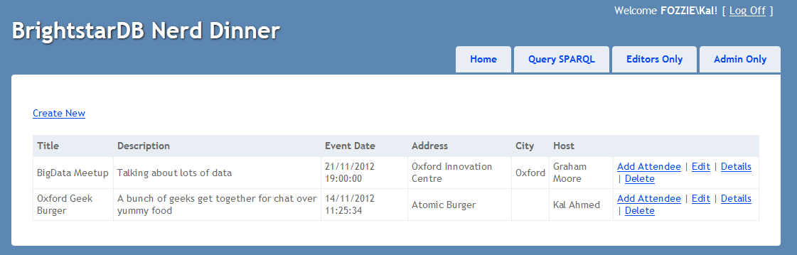If you use a query to find or group dinners by their city, those dinners that have no value for the city will not be returned by the query, and of course if you try to edit one of those dinners, then you will be required to provide a value for the City field.
Custom Membership Providers are a quick and straightforward way of managing membership information when you wish to store that membership data in a data source that is not supported by the membership providers included within the .NET framework. Often developers will need to implement custom membership providers even when storing the data in a supported data source, because the schema of that membership information differs from that in the default providers.
In this topic we are going to add a Custom Membership Provider to the Nerd Dinner sample so that users can register and login.
- Add a new class to your project and name it BrightstarMembershipProvider.cs
- Make the class extend System.Web.Security.MembershipProvider. This is the abstract class that all ASP.NET membership providers must inherit from.
- Right click on the MembershipProvider class name and choose “Implement abstract class” from the context menu, this automatically creates all the override methods that your custom class can implement.
- Add a new interface to the Models directory and name it INerdDinnerLogin.cs
- Add the [Entity] attribute to the interface, and add the properties shown below:
- The Id property is decorated with the Identifier attribute to allow us to work with simpler string values rather than the full URI that is generated by BrightstarDB (for more information, please read the Entity Framework Documentation).
[Entity]
public interface INerdDinnerLogin
{
[Identifier("http://nerddinner.com/logins/")]
string Id { get; }
string Username { get; set; }
string Password { get; set; }
string PasswordSalt { get; set; }
string Email { get; set; }
string Comments { get; set; }
DateTime CreatedDate { get; set; }
DateTime LastActive { get; set; }
DateTime LastLoginDate { get; set; }
bool IsActivated { get; set; }
bool IsLockedOut { get; set; }
DateTime LastLockedOutDate { get; set; }
string LastLockedOutReason { get; set; }
int? LoginAttempts { get; set; }
}
To update the Brightstar Entity Context, right click on the NerdDinnerContext.tt file and select “Run Custom Tool” from the context menu.
To configure your web application to use this custom Membership Provider, we simply need to change the configuration values in the Web.config file in the root directory of the application. Change the membership node contained within the <system.web> to the snippet below:
- <providers>
<clear/> <add name=”BrightstarMembershipProvider”
- type=”BrightstarDB.Samples.NerdDinner.BrightstarMembershipProvider,
- BrightStarDB.Samples.NerdDinner”
- enablePasswordReset=”true”
- maxInvalidPasswordAttempts=”5”
- minRequiredPasswordLength=”6”
- minRequiredNonalphanumericCharacters=”0”
- passwordAttemptWindow=”10” applicationName=”/” />
</providers>
</membership>
Note that if the name of your project is not BrightstarDB.Samples.NerdDinner, you will have to change the type=”” attribute to the correct full type reference.
We must also change the authentication method for the web application to Forms authentication. This is done by adding the following inside the <system.web> section of the Web.config file:
<authentication mode="Forms"/>
If after making these changes you see an error message like this in the browser:
Parser Error Message: It is an error to use a section registered as
allowDefinition='MachineToApplication' beyond application level. This error can be caused by
a virtual directory not being configured as an application in IIS.
The most likely problem is that you have added the <membership> and <authentication> tags into the Web.config file contained in the Views folder. These configuration elements must ONLY go in the Web.config file located in the project’s root directory.
Note
For the purpose of keeping this example simple, we will leave some of these methods to throw
NotImplementedException, but you can add in whatever logic suits your business requirements once you have the basic functionality up and running.
The full code for the BrightstarMembershipProvider.cs is given below, but can be broken down as follows:
Initialization
We add an Initialize() method along with a GetConfigValue() helper method to handle retrieving the configuration values from Web.config, and setting default values if it is unable to retrieve a value.
Private helper methods
We add three more helper methods: CreateSalt() and CreatePasswordHash() to help us with user passwords, and ConvertLoginToMembershipUser() to return a built in .NET MembershipUser object when given the BrightstarDB INerdDinnerLogin entity.
CreateUser()
The CreateUser() method is used when a user registers on our site, the first part of this code validates based on the configuration settings (such as whether an email must be unique) and then creates a NerdDinnerLogin entity, adds it to the NerdDinnerContext and saves the changes to the BrightstarDB store.
GetUser()
The GetUser() method simply looks up a login in the BrightstarDB store, and returns a .NET MembershipUser object with the help of the ConvertLoginToMembershipUser() method mentioned above.
GetUserNameByEmail()
The GetUserNameByEmail() method is similar to the GetUser() method but looks up by email rather than username. It’s used by the CreateUser() method if the configuration settings specify that new users must have unique emails.
ValidateUser()
The ValidateUser() method is used when a user logs in to our web application. The login is looked up in the BrightstarDB store by username, and then the password is checked. If the checks pass successfully then it returns a true value which enables the user to successfully login.
using System;
using System.Collections.Specialized;
using System.Linq;
using System.Security.Cryptography;
using System.Web.Security;
using BrightstarDB.Samples.NerdDinner.Models;
namespace BrightstarDB.Samples.NerdDinner
{
public class BrightstarMembershipProvider : MembershipProvider
{
#region Configuration and Initialization
private string _applicationName;
private const bool _requiresUniqueEmail = true;
private int _maxInvalidPasswordAttempts;
private int _passwordAttemptWindow;
private int _minRequiredPasswordLength;
private int _minRequiredNonalphanumericCharacters;
private bool _enablePasswordReset;
private string _passwordStrengthRegularExpression;
private MembershipPasswordFormat _passwordFormat = MembershipPasswordFormat.Hashed;
private string GetConfigValue(string configValue, string defaultValue)
{
if (string.IsNullOrEmpty(configValue))
return defaultValue;
return configValue;
}
public override void Initialize(string name, NameValueCollection config)
{
if (config == null) throw new ArgumentNullException("config");
if (string.IsNullOrEmpty(name)) name = "BrightstarMembershipProvider";
if (String.IsNullOrEmpty(config["description"]))
{
config.Remove("description");
config.Add("description", "BrightstarDB Membership Provider");
}
base.Initialize(name, config);
_applicationName = GetConfigValue(config["applicationName"],
System.Web.Hosting.HostingEnvironment.ApplicationVirtualPath);
_maxInvalidPasswordAttempts = Convert.ToInt32(
GetConfigValue(config["maxInvalidPasswordAttempts"], "10"));
_passwordAttemptWindow = Convert.ToInt32(
GetConfigValue(config["passwordAttemptWindow"], "10"));
_minRequiredNonalphanumericCharacters = Convert.ToInt32(
GetConfigValue(config["minRequiredNonalphanumericCharacters"],
- _minRequiredPasswordLength = Convert.ToInt32(
- GetConfigValue(config[“minRequiredPasswordLength”], “6”));
- _enablePasswordReset = Convert.ToBoolean(
- GetConfigValue(config[“enablePasswordReset”], “true”));
- _passwordStrengthRegularExpression = Convert.ToString(
- GetConfigValue(config[“passwordStrengthRegularExpression”], “”));
}
#endregion
#region Properties
public override string ApplicationName {
get { return _applicationName; } set { _applicationName = value; }
}
public override int MaxInvalidPasswordAttempts {
get { return _maxInvalidPasswordAttempts; }
}
public override int MinRequiredNonAlphanumericCharacters {
get { return _minRequiredNonalphanumericCharacters; }
}
public override int MinRequiredPasswordLength {
get { return _minRequiredPasswordLength; }
}
public override int PasswordAttemptWindow {
get { return _passwordAttemptWindow; }
}
public override MembershipPasswordFormat PasswordFormat {
get { return _passwordFormat; }
}
public override string PasswordStrengthRegularExpression {
get { return _passwordStrengthRegularExpression; }
}
public override bool RequiresUniqueEmail {
get { return _requiresUniqueEmail; }
} #endregion
#region Private Methods
private static string CreateSalt() {
var rng = new RNGCryptoServiceProvider(); var buffer = new byte[32]; rng.GetBytes(buffer); return Convert.ToBase64String(buffer);
}
private static string CreatePasswordHash(string password, string salt) {
var snp = string.Concat(password, salt); var hashed = FormsAuthentication.HashPasswordForStoringInConfigFile(snp, “sha1”); return hashed;
}
/// <summary> /// This helper method returns a .NET MembershipUser object generated from the
/// </summary> private static MembershipUser ConvertLoginToMembershipUser(INerdDinnerLogin login) {
if (login == null) return null; var user = new MembershipUser(“BrightstarMembershipProvider”,
login.Username, login.Id, login.Email, “”, “”, login.IsActivated, login.IsLockedOut, login.CreatedDate, login.LastLoginDate, login.LastActive, DateTime.UtcNow, login.LastLockedOutDate);return user;
}
#endregion
public override MembershipUser CreateUser(string username, string password, string
email, string passwordQuestion, string passwordAnswer, bool isApproved, object providerUserKey, out MembershipCreateStatus status)
- {
var args = new ValidatePasswordEventArgs(email, password, true);
OnValidatingPassword(args);
if (args.Cancel) {
status = MembershipCreateStatus.InvalidPassword; return null;}
if (string.IsNullOrEmpty(email)) {
status = MembershipCreateStatus.InvalidEmail; return null;}
if (string.IsNullOrEmpty(password)) {
status = MembershipCreateStatus.InvalidPassword; return null;}
if (RequiresUniqueEmail && GetUserNameByEmail(email) != “”) {
status = MembershipCreateStatus.DuplicateEmail; return null;}
var u = GetUser(username, false);
try {
if (u == null) {
var salt = CreateSalt();
//Create a new NerdDinnerLogin entity and set the properties var login = new NerdDinnerLogin {
Username = username, Email = email, PasswordSalt = salt, Password = CreatePasswordHash(password, salt), CreatedDate = DateTime.UtcNow, IsActivated = true, IsLockedOut = false, LastLockedOutDate = DateTime.UtcNow, LastLoginDate = DateTime.UtcNow, LastActive = DateTime.UtcNow}; //Create a context using the connection string in the Web.Config var context = new NerdDinnerContext(); //Add the entity to the context context.NerdDinnerLogins.Add(login); //Save the changes to the BrightstarDB store context.SaveChanges();
status = MembershipCreateStatus.Success; return GetUser(username, true /online/);
}
} catch (Exception) {
status = MembershipCreateStatus.ProviderError; return null;}
status = MembershipCreateStatus.DuplicateUserName; return null;
}
public override MembershipUser GetUser(string username, bool userIsOnline) {
if (string.IsNullOrEmpty(username)) return null; //Create a context using the connection string in Web.config var context = new NerdDinnerContext(); //Query the store for a NerdDinnerLogin that matches the supplied username var login = context.NerdDinnerLogins.Where(l =>
if (login == null) return null; if(userIsOnline) {
//if the call states that the user is online, update the LastActive property
login.LastActive = DateTime.UtcNow; context.SaveChanges();} return ConvertLoginToMembershipUser(login);
}
public override string GetUserNameByEmail(string email) {
if (string.IsNullOrEmpty(email)) return “”; //Create a context using the connection string in Web.config var context = new NerdDinnerContext(); //Query the store for a NerdDinnerLogin that matches the supplied username var login = context.NerdDinnerLogins.Where(l =>
if (login == null) return string.Empty; return login.Username;
}
public override bool ValidateUser(string username, string password) {
//Create a context using the connection string set in Web.config var context = new NerdDinnerContext(); //Query the store for a NerdDinnerLogin matching the supplied username var logins = context.NerdDinnerLogins.Where(l => l.Username.Equals(username)); if (logins.Count() == 1) {
//Ensure that only a single login matches the supplied username var login = logins.First(); //Check the properties on the NerdDinnerLogin to ensure the user account is
if (!validatePassword) {
//return validation failure return false;} //return validation success return true;
} return false;
}
#region MembershipProvider properties and methods not implemented for this tutorial
#endregion
}
}
All the models, views and controllers needed to implement the logic logic are generated automatically when creating a new MVC4 Web Application if the option for “Internet Application” is selected. However, if you are following this tutorial through from the beginning you will need to add this infrastructure by hand. The infrastructure includes:
- An AccountController class with ActionResult methods for logging in, logging out and
registering (in AccountController.cs in the Controllers folder).
- AccountModels.cs which contains classes for LogonModel and RegisterModel (in the Models
folder).
- LogOn, Register, ChangePassword and ChangePasswordSuccess views that use the models to
display form fields and validate input from the user (in the Views/Account folder).
- A _LogOnPartial view that is used in the main _Layout view to display a login link, or the
username if the user is logged in (in the Views/Shared folder).
Note
These files can be found in [INSTALLDIR]\Samples\NerdDinner\BrightstarDB.Samples.NerdDinner
The details of the contents of these files is beyond the scope of this tutorial, however the infrastructure is all designed to work with the configured Membership Provider for the web application - in our case the BrightstarMembershipProvider class we have just created.
The AccountController created here has some dependencies on the Custom Role Provider discussed in the next section. You will need to complete the steps in the next section before you will be able to successfully register a user in the web application.
Summary
In this tutorial we have walked through some simple steps to use a Custom Membership Provider to allow BrightstarDB to handle the authentication of users on your MVC3 Web Application.
For simplicity, we have kept the same structure of membership information as we would find in a default provider, but you can expand on this sample to include extra membership information by simply adding more properties to the BrightstarDB entity.
As with Custom Membership Providers, Custom Role Providers allow developers to use role management within application when either the role information is stored in a data source other than that supported by the default providers, or the role information is managed in a schema which differs from that set out in the default providers.
In this topic we are going to add a Custom Role Provider to the Nerd Dinner sample so that we can restrict certain areas from users who are not members of the appropriate role.
- Add the following line to the INerdDinnerLogin interface’s
properties``ICollection<string> Roles { get; set; } ``To update the context classes, right click on the NerdDinnerContext.tt file and select “Run Custom Tool” from the context menu.
- Add a new class to your project and name it BrightstarRoleProvider.cs
- Make this new class inherit from the RoleProvider class (System.Web.Security namespace)
- Right click on the RoleProvider class name and choose “Implement abstract class” from the
context menu, this automatically creates all the override methods that your custom class can implement.
To configure your web application to use the Custom Role Provider, add the following to your Web.config, inside the <system.web> section:
<roleManager enabled=”true” defaultProvider=”BrightstarRoleProvider”>
<providers>
<clear/>
<add name=”BrightstarRoleProvider” type=”BrightstarDB.Samples.NerdDinner.BrightstarRoleProvider” applicationName=”/” />
</providers>
</roleManager>
To set up the default login path for the web application, replace the <authentication> element in the Web.config file with the following:
<authentication mode=”Forms”>
<forms loginUrl=”/Account/LogOn”/>
</authentication>
The full code for the BrightstarRoleProvider.cs is given below, but can be broken down as follows:
Initialization
We add an Initialize() method along with a GetConfigValue() helper method to handle retrieving the configuration values from Web.config, and setting default values if it is unable to retrieve a value.
GetRolesForUser()
This method returns the contents of the Roles collection that we added to the INerdDinnerLogin entity as a string array.
AddUsersToRoles()
AddUsersToRoles() loops through the usernames and role names supplied, and looks up the logins from the BrightstarDB store. When found, the role names are added to the Roles collection for that login.
RemoveUsersFromRoles()
RemoveUsersFromRoles() loops through the usernames and role names supplied, and looks up the logins from the BrightstarDB store. When found, the role names are removed from the Roles collection for that login.
IsUserInRole()
The BrightstarDB store is searched for the login who matches the supplied username, and then a true or false is passed back depending on whether the role name was found in that login’s Role collection. If the login is inactive or locked out for any reason, then a false value is passed back.
GetUsersInRole()
BrightstarDB is queried for all logins that contain the supplied role name in their Roles collection.
using System;
using System.Collections.Generic;
using System.Linq;
using System.Web;
using System.Web.Security;
using BrightstarDB.Samples.NerdDinner.Models;
namespace BrightstarDB.Samples.NerdDinner
{
public class BrightstarRoleProvider : RoleProvider
{
#region Initialization
private string _applicationName;
private static string GetConfigValue(string configValue, string defaultValue)
{
if (string.IsNullOrEmpty(configValue))
return defaultValue;
return configValue;
}
public override void Initialize(string name,
if (config == null) throw new ArgumentNullException(“config”);
if (string.IsNullOrEmpty(name)) name = “NerdDinnerRoleProvider”;
if (String.IsNullOrEmpty(config[“description”])) {
config.Remove(“description”); config.Add(“description”, “Nerd Dinner Membership Provider”);
} base.Initialize(name, config); _applicationName = GetConfigValue(config[“applicationName”],
System.Web.Hosting.HostingEnvironment.ApplicationVirtualPath);
}
#endregion
/// <summary> /// Gets a list of the roles that a specified user is in for the configured
/// </returns> /// <param name=”username”>The user to return a list of roles for.</param> public override string[] GetRolesForUser(string username) {
if (string.IsNullOrEmpty(username)) throw new ArgumentNullException(“username”); //create a new BrightstarDB context using the values in Web.config var context = new NerdDinnerContext(); //find a match for the username var login = context.NerdDinnerLogins.Where(l =>
if (login == null) return null; //return the Roles collection return login.Roles.ToArray();
}
/// <summary> /// Adds the specified user names to the specified roles for the configured
specified roles. </param><param name=”roleNames”>A string array of the role names to add the specified user names to.</param>
public override void AddUsersToRoles(string[] usernames, string[] roleNames) {
//create a new BrightstarDB context using the values in Web.config var context = new NerdDinnerContext(); foreach (var username in usernames) {
//find the match for the username var login = context.NerdDinnerLogins.Where(l =>
if (login == null) continue; foreach (var role in roleNames) {
//if the Roles collection of the login does not already contain the
if (login.Roles.Contains(role)) continue; login.Roles.Add(role);}
} context.SaveChanges();
}
/// <summary> /// Removes the specified user names from the specified roles for the configured
specified roles. </param><param name=”roleNames”>A string array of role names to remove the specified user names from.</param>
public override void RemoveUsersFromRoles(string[] usernames, string[] roleNames) {
//create a new BrightstarDB context using the values in Web.config var context = new NerdDinnerContext(); foreach (var username in usernames) {
//find the match for the username var login = context.NerdDinnerLogins.Where(l =>
if (login == null) continue; foreach (var role in roleNames) {
//if the Roles collection of the login contains the role, then remove it if (!login.Roles.Contains(role)) continue; login.Roles.Remove(role);}
} context.SaveChanges();
}
/// <summary> /// Gets a value indicating whether the specified user is in the specified role for
/// </returns> /// <param name=”username”>The username to search for.</param> /// <param name=”roleName”>The role to search in.</param> public override bool IsUserInRole(string username, string roleName) {
try {
//create a new BrightstarDB context using the values in Web.config var context = new NerdDinnerContext(); //find a match for the username var login = context.NerdDinnerLogins.Where(l =>
if (login == null || login.IsLockedOut || !login.IsActivated) {
// no match or inactive automatically returns false return false;
} //if the Roles collection of the login contains the role we are checking
return login.Roles.Contains(roleName.ToLower());} catch (Exception) {
return false;}
}
/// <summary> /// Gets a list of users in the specified role for the configured applicationName. /// </summary> /// <returns> /// A string array containing the names of all the users who are members of the
/// </returns> /// <param name=”roleName”>The name of the role to get the list of users for.</param> public override string[] GetUsersInRole(string roleName) {
if (string.IsNullOrEmpty(roleName)) throw new ArgumentNullException(“roleName”); //create a new BrightstarDB context using the values in Web.config var context = new NerdDinnerContext(); //search for all logins who have the supplied roleName in their Roles collection var usersInRole = context.NerdDinnerLogins.Where(l =>
return usersInRole.ToArray();
}
/// <summary> /// Gets a value indicating whether the specified role name already exists in the
public override bool RoleExists(string roleName) {
//for the purpose of the sample the roles are hard coded return roleName.Equals(“admin”) || roleName.Equals(“editor”) ||
}
/// <summary> /// Gets a list of all the roles for the configured applicationName. /// </summary> /// <returns> /// A string array containing the names of all the roles stored in the data source
/// </returns> public override string[] GetAllRoles() {
//for the purpose of the sample the roles are hard coded return new string[] { “admin”, “editor”, “standard” };
}
/// <summary> /// Gets an array of user names in a role where the user name contains the specified
public override string[] FindUsersInRole(string roleName, string usernameToMatch) {
if (string.IsNullOrEmpty(roleName)) throw new ArgumentNullException(“roleName”); if (string.IsNullOrEmpty(usernameToMatch)) throw new
ArgumentNullException(“usernameToMatch”);
var allUsersInRole = GetUsersInRole(roleName); if (allUsersInRole == null || allUsersInRole.Count() < 1) return new string[] {
var match = (from u in allUsersInRole where u.Equals(usernameToMatch) select u); return match.ToArray();
}
#region Properties
/// <summary> /// Gets or sets the name of the application to store and retrieve role information
/// </summary> /// <returns> /// The name of the application to store and retrieve role information for. /// </returns> public override string ApplicationName {
get { return _applicationName; } set { _applicationName = value; }
}
#endregion
#region Not Implemented Methods
/// <summary> /// Adds a new role to the data source for the configured applicationName. /// </summary> /// <param name=”roleName”>The name of the role to create.</param> public override void CreateRole(string roleName) {
//for the purpose of the sample the roles are hard coded throw new NotImplementedException();
}
/// <summary> /// Removes a role from the data source for the configured applicationName. /// </summary> /// <returns> /// true if the role was successfully deleted; otherwise, false. /// </returns> /// <param name=”roleName”>The name of the role to delete.</param><param
name=”throwOnPopulatedRole”>If true, throw an exception if <paramref name=”roleName”/> has one or more members and do not delete <paramref name=”roleName”/>.</param>
public override bool DeleteRole(string roleName, bool throwOnPopulatedRole) {
//for the purpose of the sample the roles are hard coded throw new NotImplementedException();}
#endregion
}
}
To display the functionality of the new Custom Role Provider, add 2 new ViewResult methods to the Home Controller. Notice that the [Authorize] MVC attribute has been added to each of the methods to restrict access to users in those roles only.
[Authorize(Roles = "editor")]
public ViewResult SecureEditorSection()
{
return View();
}
[Authorize(Roles = "admin")]
public ViewResult SecureAdminSection()
{
return View();
}
Right click on the View() methods, and select “Add View” for each. This automatically adds the SecureEditorSection.cshtml and SecureAdminSection.cshtml files to the Home view folder.
To be able to navigate to these sections, open the file Views/Shared/_Layout.cshtml and add two new action links to the main navigation menu:
<div id="menucontainer">
<ul id="menu">
<li>@Html.ActionLink("Home", "Index", "Home")</li>
<li>@Html.ActionLink("Query SPARQL", "Index", "Sparql")</li>
**<li>@Html.ActionLink("Editors Only", "SecureEditorSection", "Home")</li>**
**<li>@Html.ActionLink("Admin Only", "SecureAdminSection", "Home")</li>**
</ul>
</div>
In a real world application, you would manage roles within your own administration section, but for the purpose of this sample we are going with an overly simplistic way of adding a user to a role.
Press F5 to run the application. You will notice a [Log On] link in the top right hand corner of the screen. You can navigate to the registration page via the logon page.
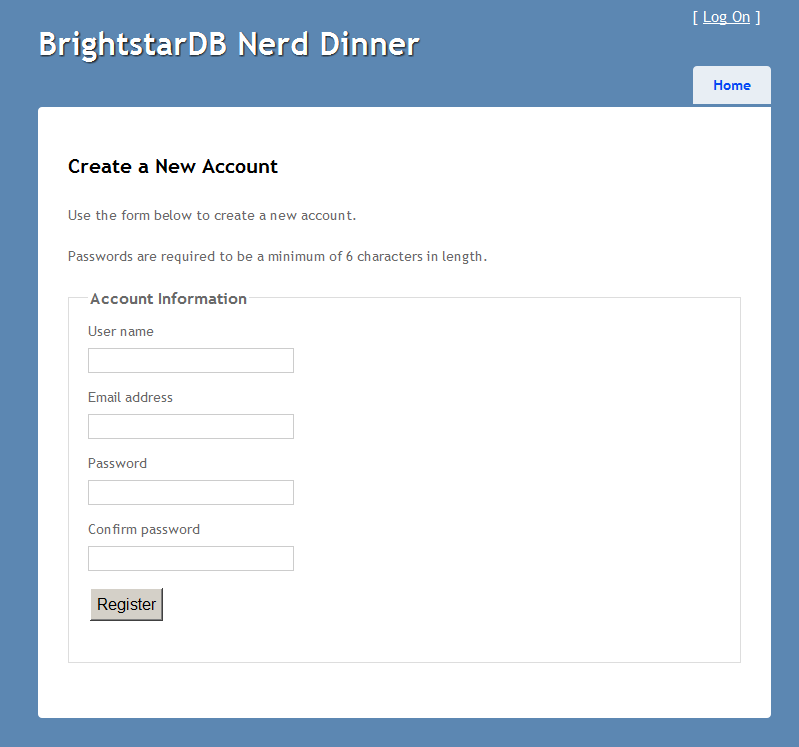Register
Choosing a username, email and password will create a login entity for you in the BrightstarDB store, and automatically log you in.
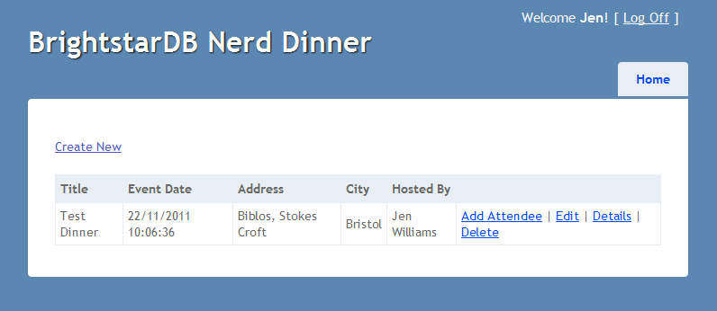Logged In
The partial view that contains the login link code recognizes that you are logged in and displays your username and a [Log Off] link. Clicking the links clears the cookies that keep you logged in to the website.
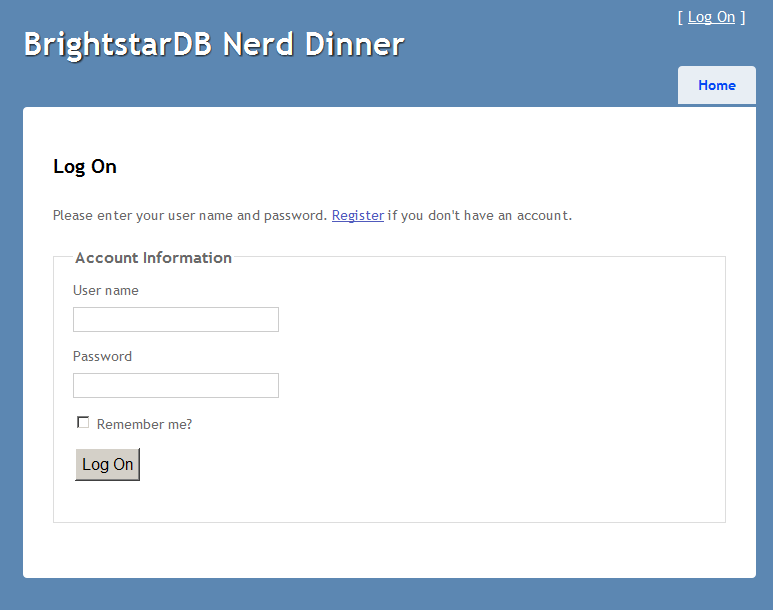Log On
You can log on again at any time by entering your username and password.
Role Authorization
Clicking on the navigation links to “Secure Editor Section” will allow access to that view. Whereas the “Secure Admin Section” will not pass authorization - by default MVC redirects the user to the login view.
As data on the web becomes more predominant, it is becoming increasingly important to be able to expose the underlying data of a web application in some way that is easy for external applications to consume. While many web applications choose to expose bespoke APIs, these are difficult for developers to use because each API has its own data structures and calls to access data. However there are two well supported standards for publishing data on the web - OData and SPARQL.
OData is an open standard, originally created by Microsoft, that provides a framework for exposing a collection of entities as data accessible by URIs and represented in ATOM feeds. SPARQL is a standard from the W3C for querying an RDF data store. Because BrightstarDB is, under the hood, an RDF data store adding SPARQL support is pretty straightforward; and because the BrightstarDB Entity Framework provides a set of entity classes, it is also very easy to create an OData endpoint.
In this section we will show how to add these different forms of Linked Data to your web application.
The standard way of interfacing to a SPARQL endpoint is to either use an HTTP GET with a ?query= parameter that carries the SPARQL query as a string; or to use an HTTP POST which has a form encoded in the POST request with a query field in it. For this example we will do the latter as it is easiest to show and test with a browser-based API. We will create a query action at /sparql, and include a form that allows a SPARQL query to be submitted through the browser. To do this we need to create a new Controller to handle the /sparql URL.
Right-click on the Controllers folder and choose Add > Controller. In the dialog that is displayed, change the controller name to SparqlController, and choose the Empty MVC Controller template option from the drop-down list.
Edit the SparqlController.cs file to add the following two methods to the class:
public ViewResult Index()
{
return View();
}
[HttpPost]
[ValidateInput(false)]
public ActionResult Index(string query)
{
if (String.IsNullOrEmpty(query))
{
return View("Error");
}
var client = BrightstarService.GetClient();
var results = client.ExecuteQuery("NerdDinner", query);
return new FileStreamResult(results, "application/xml; charset=utf-16");
}
The first method just displays a form that will allow a user to enter a SPARQL query. The second method handles a POST operation and extracts the SPARQL query and executes it, returning the results to the browser directly as an XML data stream.
Create a new folder under Views called “Sparql” and add a new View to the Views\Sparql with the name Index.cshtml. This view simply displays a form with a large enough text box to allow a query to be entered.
<h2>SPARQL</h2>
@using (Html.BeginForm()) {
@Html.ValidationSummary(true)
<p>Enter your SPARQL query in the text box below:</p>
@Html.TextArea("query", "SELECT ?d WHERE {?d a <
http://brightstardb.com/namespaces/default/Dinner>}”, 10, 50, null)
- <p>
- <input type=”submit” value=”Query” />
</p>
}
Now you can compile and run the web application again and click on the Query SPARQL link at the top of the page (or simply navigate to the /sparql address for the web application). As this is a normal browser HTTP GET, you will see the form rendered by the first of the two action methods. By default this contains a SPARQL query that should work nicely against the NerdDinner entity model, returning the URI identifiers of all Dinner entities in the BrightstarDB data store.
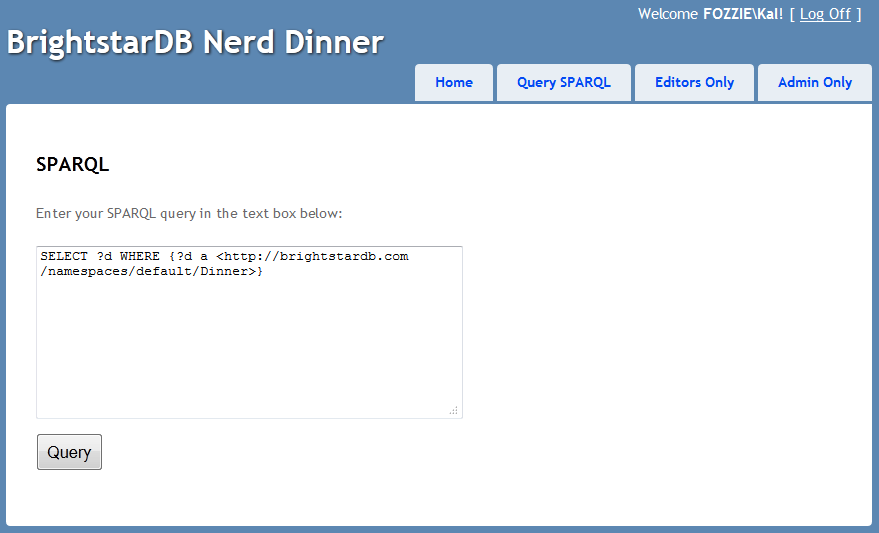Clicking on the Query button submits the form, simulating an HTTP POST from an external application. The results are returned as raw XML, which will be formatted and displayed depending on which browser you use and your browser settings (the screenshot below is from a Firefox browser window).
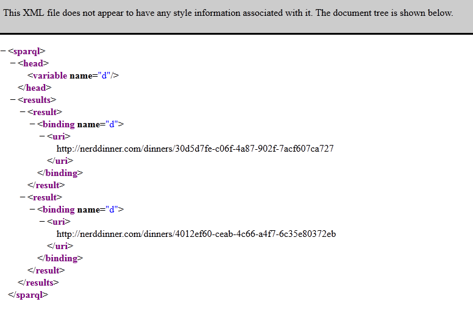The Open Data Protocol (OData) is an open web protocol for querying and updating data. An OData provider can be added to BrightstarDB Entity Framework projects to allow OData consumers to query the underlying data.
The following steps describe how to create an OData provider to an existing project (in this example we add to the NerdDinner MVC Web Application project).
1. Right-click on the project in the Solution Explorer and select Add New Item. In the dialog that is displayed click on Web, and select WCF Data Service. Rename this to OData.svc and click ‘add’.
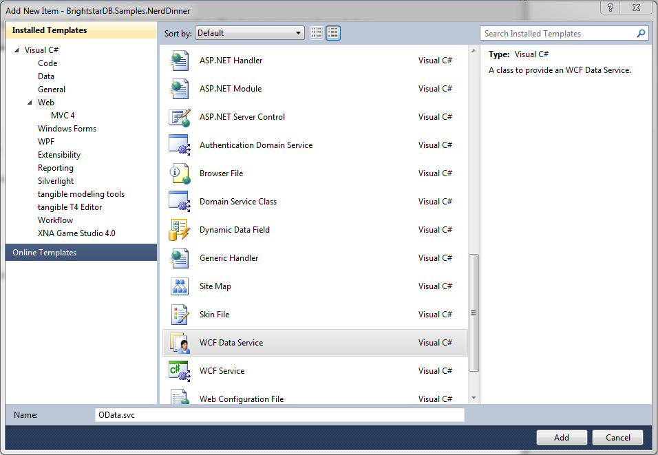2. Change the class inheritance from DataService to EntityDataService, and add the name of the BrightstarEntityContext to the type argument.
public class OData : EntityDataService<NerdDinnerContext>
{
// This method is called only once to initialize service-wide policies.
public static void InitializeService(DataServiceConfiguration config)
{
config.SetEntitySetAccessRule("*", EntitySetRights.AllRead);
config.SetEntitySetAccessRule("NerdDinnerLogin", EntitySetRights.None);
config.SetServiceOperationAccessRule("*", ServiceOperationRights.All);
config.DataServiceBehavior.MaxProtocolVersion = DataServiceProtocolVersion.V2;
}
}
Note
The NerdDinnerLogin set has been given EntitySetRights of None. This hides the set (which
contains sensitive login information) from the OData service
4. Rebuild and run the project. Navigation to /OData.svc and you will see the standard OData metadata page displaying the entity sets from BrightstarDB
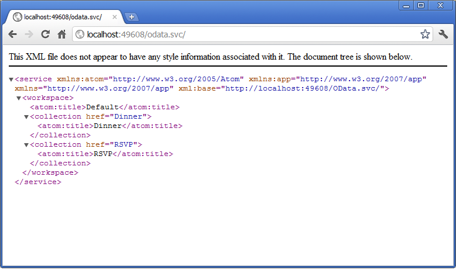5. The OData service can now be queried using the standard OData conventions. There are a few restrictions when using OData services with BrighstarDB.
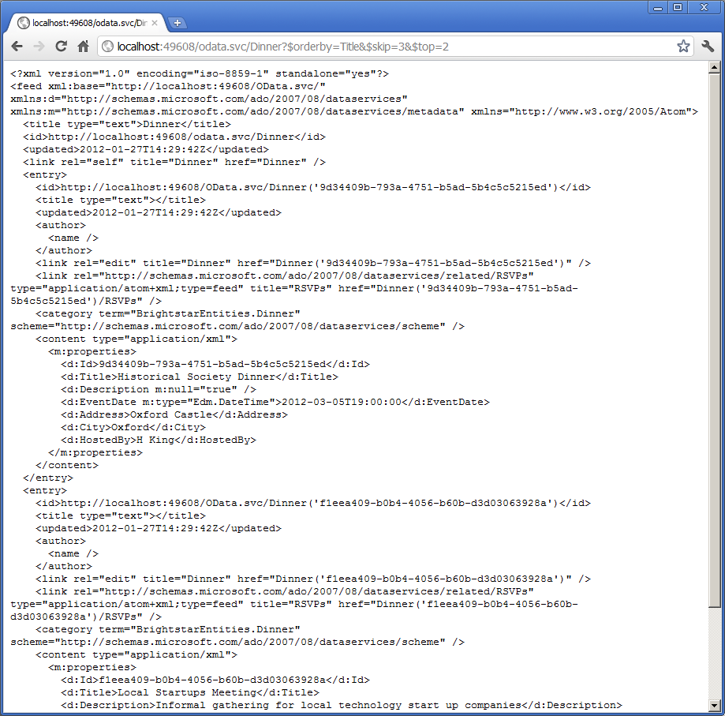The data in BrighstarDB can be consumed by various OData consumers. In this topic we look at consuming the data using PowerPivot (a list of recommended OData consumers can be found odata.org/consumers).
Open Excel, click the PowerPivot tab and open the PowerPivot window
If you do not have PowerPivot installed, you can download it from powerpivot.com
To consume data from Brightstar, click the ‘From Data Feeds’ button in the ‘Get External Data’ section:
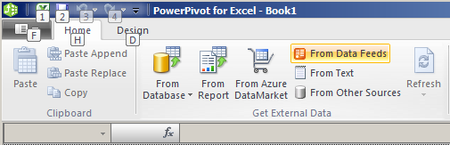Add a name for your feed, and enter the URL of the OData service file for your BrightstarDB application.
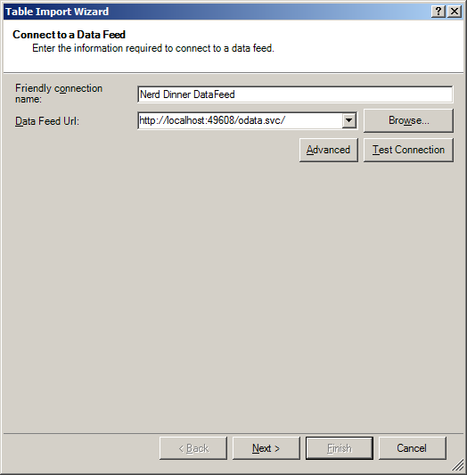Click “Test Connection” to make sure that you can connect to your OData service and then click “Next”
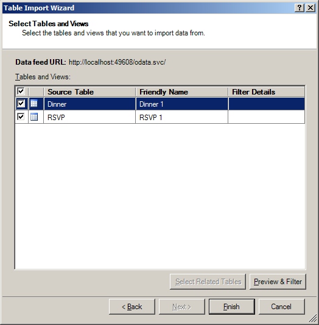Select the sets that you wish to consume and click “Finish”
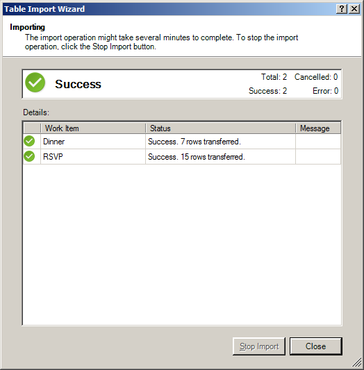This then shows all the data that is consumed from the OData service in the PowerPivot window. When any data is added or edited in the BrightstarDB store, the data in the PowerPivot windows can be updated by clicking the “Refresh” button.
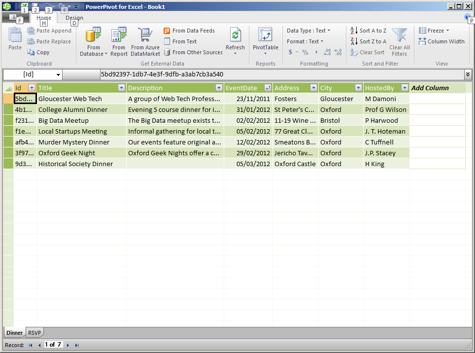Note
The source code for this example can be found in
[INSTALLDIR]\Samples\EntityFramework\EntityFrameworkSamples.sln
One of the things that makes BrightstarDB unique is the ability to map multiple object models onto the same data and to map an object model onto existing RDF data. An example of this could be when some contact data in RDF foaf form is imported into BrightstarDB and an application wants to make use of that data. Using the BrightstarDB annotations it is possible to map object classes and properties to existing types and property types.
<http://www.brightstardb.com/people/david> <http://www.w3.org/1999/02/22-rdf-syntax-ns#type>
http://www.brightstardb.com/people/david> .
Triples can be loaded into the BrightStarDB using the following code::
var triples = new StringBuilder();
triples.AppendLine(@"<http://www.brightstardb.com/people/simon> <
To access this data from the Entity Framework, we need to define the mappings between the RDF predictates and the properties on an object that represents an entity in the store.
The properties are marked up with the PropertyType attribute of the RDF predicate. If the property “Name” should match the predicate “http://xmlns.com/foaf/0.1/name”, we add the attribute [PropertyType("```http://xmlns.com/foaf/0.1/name`_”)].``
We can add a Namespace Declaration to the project’s AssemblyInfo.cs file to shorted the URIs used in the attributes, in the format::
[assembly: NamespaceDeclaration("foaf", "`http://xmlns.com/foaf/0.1/")`_]
This means the PropertyType attributes can be shortened to [PropertyType("foaf:name")]
The RDF example given above would be mapped to an entity as given below::
[Entity("http://xmlns.com/foaf/0.1/Person")]
public interface IPerson
{
[Identifier("http://www.brightstardb.com/people/")]
string Id { get; }
[PropertyType("foaf:nick")]
string Nickname { get; set; }
[PropertyType("foaf:name")]
string Name { get; set; }
[PropertyType("foaf:Organization")]
string Organisation { get; set; }
[PropertyType("foaf:knows")]
ICollection<IPerson> Knows { get; set; }
[InversePropertyType("foaf:knows")]
ICollection<IPerson> KnownBy { get; set; }
}
Adding the [Identifier(“http://www.``brightstardb``.com/people/”)] to the ID of the interface, means that when we can query and retrieve the Id without the entire prefix
Once there is RDF data in the store, and an interface that maps an entity to the RDF data, the data can then be accessed easy using the Entity Framework by using the correct connection string to directly access the store.
var connectionString = "Type=http;endpoint=http://localhost:8090/brightstar;StoreName=Foaf";
var context = new FoafContext(connectionString);
If you have added the connection string into the Config file:
<add key=”BrightstarDB.ConnectionString” value=”Type=http;endpoint= http://localhost:8090/brightstar;StoreName=Foaf” />
then you can initialise the content with a simple::
var context = new FoafContext();
For more information about connection strings, please read the “Connection Strings” topic
The code below connects to the store to access all the people in the RDF data, it then writes their name and place of employment, along with all the people they know or are known by.
var context = new FoafContext(connectionString);
var people = context.Persons.ToList();
var count = people.Count;
Console.WriteLine(@"{0} people found in raw RDF data", count);
Console.WriteLine();
foreach(var person in people)
{
var knows = new List<IPerson>();
knows.AddRange(person.Knows);
knows.AddRange(person.KnownBy);
Console.WriteLine(@"{0} ({1}), works at {2}", person.Name, person.Nickname,
foreach(var other in knows) {
Console.WriteLine(@” {0} at {1}”, other.Name, other.Organisation);} Console.WriteLine();
}
The Data Object Layer is a simple generic object wrapper for the underlying RDF data in any BrightstarDB store.
Data Objects are lightweight wrappers around sets of RDF triples in the underlying BrightstarDB store. They allow the developer to interact with the RDF data without requiring all information to be sent in N-Triple format.
For more information about the RDF layer of BrightstarDB, please read the RDF Client API section.
The following example shows how to create a new context using a connection string:
var context = BrightstarService.GetDataObjectContext("Type=http;endpoint=
http://localhost:8090/brightstar;”);
For more information about connection strings, please read the “Connection Strings” topic
A new store can be creating using the following code:
string storeName = "Store_" + Guid.NewGuid();
context.CreateStore(storeName);
Data Objects can be created using the following code:
var fred = store.MakeDataObject("http://example.org/people/fred");
The objects can be created by passing in a well formed URI as the identity, if no identity is given then one is automatically generated for it.
To add information about this object we can add properties to it:
Setting Single Properties
To set the value of a single property, use the following code:
var fullname = store.MakeDataObject("http://example.org/schemas/person/fullName");
fred.SetProperty(fullname, "Fred Evans");
Using SetProperty() multiple times will overwrite the previous value of the property.
Adding Multiple Properties
To add multiple properties of the same type use the code below:
var skill = store.MakeDataObject("http://example.org/schemas/person/skill");
fred.AddProperty(skill, csharp);
fred.AddProperty(skill, html);
fred.AddProperty(skill, css);
A data object can be retrieved from the store using the following code:
var fred = store.GetDataObject("http://example.org/people/fred");
If BrightstarDB does not hold any information about a given URI, then a data object is created for it and passed back. When the developer adds properties to it and saves it, the identity will be automatically added to BrightstarDB.
Note
GetDataObject() will never return a null object. The data object consists of all the
information that is held in BrightstarDB for a particular identity.
We can check the RDF data that an object has at any time by using the following code:
var triples = ((DataObject)fred).Triples;
A data object can be deleted using the following code:
var fred = store.GetDataObject("http://example.org/people/fred");
fred.Delete();
This removes all triples describing that data object from the store.
Namespace mappings are sets of simple string prefixes for URIs, enabling the developer to use identities that have been shortened to use the prefixes.
For example, the mapping:
{"people", "http://example.org/people/"}
Means that the identity “people:fred” will match the identity “http://example.org/people/fred”
These mappings are passed through as a dictionary to the OpenStore() method on the context:
_namespaceMappings = new Dictionary<string, string>()
{
{"people", "http://example.org/people/"},
{"skills", "http://example.org/skills/"},
{"schema", "http://example.org/schema/"}
};
store = context.OpenStore(storeName, _namespaceMappings);
Note
It is best practise to set up a static dictionary within your class or configuration
BrightstarDB supports SPARQL 1.1 for querying the data in the store. These queries can be executed via the Data Object store using the ExecuteSparql() method.
The SparqlResult returned has the results of the SPARQL query in the ResultDocument property (See http://www.w3.org/TR/rdf-sparql-XMLres/ for the XML format returned).
var query = "SELECT ?skill WHERE { <http://example.org/people/fred> <
var sparqlResult = store.ExecuteSparql(query); foreach (var sparqlResultRow in sparqlResult.ResultDocument.SparqlResultRows()) {
var val = sparqlResultRow.GetColumnValue(“skill”); Console.WriteLine(“Skill is ” + val);
}
When a SPARQL query has been written to return a variable binding, it can be passed to the BindDataObjectsWithSparql() method. This executes the SPARQL query, and then binds each URI in the results to a data object, and passes back the enumeration of these instances.
var skillsQuery = "SELECT ?skill WHERE {?skill a <http://example.org/schemas/skill>}";
var allSkills = store.BindDataObjectsWithSparql(skillsQuery).ToList();
foreach (var s in allSkills)
{
Console.WriteLine("Skill is " + s.Identity);
}
Note
The source code for this example can be found in
[INSTALLDIR]\Samples\DataObjectLayer\DataObjectLayerSamples.sln
The sample project is a simple console application that runs through some of the basic usage for BrightstarDB’s Data Object Layer.
A context is created using a connection string that specifies usage of the HTTP server
var context = BrightstarService.GetDataObjectContext(@"Type=http;endpoint=
A store is created with a unique name
string storeName = "DataObjectLayerSample_" + Guid.NewGuid();
var store = context.CreateStore(storeName);
In order to use simpler identities when we are creating and retrieving data objects, we set up a dictionary of namespace mappings to use when we connect to the store:
_namespaceMappings = new Dictionary<string, string>()
{
{"people", "http://example.org/people/"},
{"skills", "http://example.org/skills/"},
{"schema", "http://example.org/schema/"}
};
store = context.OpenStore(storeName, _namespaceMappings);
To enable support for optimistic locking, we must pass a boolean flag to the OpenStore() or CreateStore() method:
store = context.OpenStore(storeName, _namespaceMappings, true); // Open store with
optimistic locking enabled
We create a data object to use as the type of data object for skills, and then create a number of skill data objects.
var skillType = store.MakeDataObject("schema:skill");
var csharp = store.MakeDataObject("skills:csharp");
csharp.SetType(skillType);
var html = store.MakeDataObject("skills:html");
html.SetType(skillType);
var css = store.MakeDataObject("skills:css");
css.SetType(skillType);
var javascript = store.MakeDataObject("skills:javascript");
javascript.SetType(skillType);
We follow the same process to create some people data objects.
var personType = store.MakeDataObject("schema:person");
var fred = store.MakeDataObject("people:fred");
fred.SetType(personType);
var william = store.MakeDataObject("people:william");
william.SetType(personType);
We create 2 data objects to use as the types for some properties that the people data objects will hold.
var fullname = store.MakeDataObject("schema:person/fullName");
var skill = store.MakeDataObject("schema:person/skill");
We then set the single name property on the people, and add skills
Note
For multiple properties we must use the AddProperty() method rather than SetProperty() which
would overwrite any previous value
fred.SetProperty(fullname, "Fred Evans");
fred.AddProperty(skill, csharp);
fred.AddProperty(skill, html);
fred.AddProperty(skill, css);
william.SetProperty(fullname, "William Turner");
william.AddProperty(skill, html);
william.AddProperty(skill, css);
william.AddProperty(skill, javascript);
The data type of literal properties are set automatically when a property value is added or set:
var employeeNumber = store.MakeDataObject("schema:person/employeeNumber");
var dateOfBirth = store.MakeDataObject("schema:person/dateOfBirth");
var salary = store.MakeDataObject("schema:person/salary");
fred = store.GetDataObject("people:fred");
fred.SetProperty(employeeNumber, 123);
fred.SetProperty(dateOfBirth, DateTime.Now.AddYears(-30));
fred.SetProperty(salary, 18000.00);
Now that we have created the objects we require, we save the changes to the BrightstarDB store.
store.SaveChanges();
We use SPARQL to query the data in the store. For more information about SPARQL please read the SPARQL 1.1 documenation. In the sample, we write a query that returns all of the skills of the data object for ‘fred’. We can then loop through the ResultDocument of the SparqlResult returned to see the identities of each of those skills.
const string getPersonSkillsQuery = "SELECT ?skill WHERE { <http://example.org/people/fred>
The Data Object Store has a very useful method called BindDataObjectsWithSparql(), which takes a SPARQL query that is written to return the URI identities of data object. The method then returns the data objects for each of the URIs contained in the results.
In the sample we pass in a query to return URIs of any objects with the skill type.
const string skillsQuery = "SELECT ?skill WHERE {?skill a <http://example.org/schemas/skill
To delete data objects we simply call the Delete() method of that object and save the changes to the store.
foreach (var s in allSkills)
{
s.Delete();
}
store.SaveChanges();
The Data Object Layer provides a basic level of optimistic locking support using the conditional update support provided by the RDF Client API and a special version property that gets assigned to data objects. To enable optimistic locking support it is necessary to enable locking when the IDataObjectStore instance is retrieved from the context by either the OpenStore or CreateStore method (see Sample Program for an example).
With optimistic locking enabled, the Data Object Layer checks for the presence of a special version property on every object it retrieves (the property predicate URI is http://www.brightstardb.com/.well-known/model/version). If this property is present, its value defines the current version number of the property. If the property is not present, the object is recorded as being currently unversioned. On save, the DataObjectLayer uses the current version number of all versioned data objects as the set of preconditions for the update, if any of these objects have had their version number property modified on the server, the precondition will fail and the update will not be applied. Also as part of the save, the DataObjectLayer updates the version number of all versioned data objects and creates a new version number for all unversioned data objects.
When an concurrent modification is detected, this is notified to your code by a BrightstarClientException being raised. In your code you should catch this exception and handle the error, typically either by abandoning updates (and notifying the user) or re-retrieving the modified objects and attempting the update again.
The Dynamic API is a thin layer on top of the data object layer. It is designed to further ease the use of .NET with RDF data and to provide a model for persisting data in systems that make use of the .NET dynamic keyword. The .NET dynamic keyword and dynamic runtime allow properties of objects to be set at runtime without any prior class definition.
The following example shows how dynamics work in general. Both ‘Name’ and ‘Type’ are resolved at runtime. In this case they are simply stored as properties in the ExpandoObject.
dynamic d = new ExpandoObject();
d.Name = "Brightstar";
d.Type = "Product";
A dynamic context can be used to create dynamic objects whose state is persisted as RDF in BrightstarDB. To use the dynamic context a normal DataObjectContext must be created first. From the context a store can be created or opened. The store provides methods to create and fetch dynamic objects.
var dataObjectContext = BrightstarService.GetDataObjectContext();
// create a dynamic context
var dynaContext = new BrightstarDynamicContext(dataObjectContext);
// create a new store
var storeId = "DynamicSample" + Guid.NewGuid().ToString();
var dynaStore = dynaContext.CreateStore(storeId);
The dynamic object is a wrapper around the IDataObject. When a dynamic property is set this is translated into an update to the IDataObject and in turn into RDF. By default the name of the property is appended to the default namespace. By using namespace mappings any RDF vocabulary can be mapped. If the value of the property is set to be a list of values then multiple triples are created, one for each value.
dynamic brightstar = dynaStore.MakeNewObject();
brightstar.name = "BrightstarDB";
// namespaces are used by having the prefix comes before '__'
// setting a list of values creates multiple properties on the object.
brightstar.rdfs__label = new[] { "BrightstarDB", "NoSQL Database" };
dynamic product = dynaStore.MakeNewObject();
// objects are connected together in the same way
brightstar.rdfs__type = product;
The data updated in a context is persisted when SaveChanges is called on the store object.
dynaStore.SaveChanges();
After opening a store dynamic objects can be loaded via the GetDataObject method or the BindObjectsWithSparql method.
dynaStore = dynaContext.OpenStore(storeId);
var object = dynaStore.GetDataObject(aUri);
// any sparql that returns a single variable can be bound as dynamic objects
var objects = dynaStore.BindObjectsWithSparql("select distinct ?dy where { ?dy ?p ?o }");
Note
The source code for this example can be found in [INSTALLDIR]\Samples\Dynamic\Dynamic.sln
using System;
using System.Collections.Generic;
using System.Linq;
using System.Text;
using BrightstarDB.Dynamic;
using BrightstarDB.Client;
namespace DynamicSamples
{
public class Program
{
/// <summary>
/// Assumes BrightstarDB is running as a service and exposing the default endpoint
/// </summary> /// <param name=”args”></param> static void Main(string[] args) {
// gets a new BrightstarDB DataObjectContext var dataObjectContext = BrightstarService.GetDataObjectContext();
// create a dynamic context var dynaContext = new BrightstarDynamicContext(dataObjectContext);
// open a new store var storeId = “DynamicSample” + Guid.NewGuid().ToString(); var dynaStore = dynaContext.CreateStore(storeId);
// create some dynamic objects. dynamic brightstar = dynaStore.MakeNewObject(); dynamic product = dynaStore.MakeNewObject();
// set some properties brightstar.name = “BrightstarDB”; product.rdfs__label = “Product”; var id = brightstar.Identity;
// use namespace mapping (RDF and RDFS are defined by default) // Assigning a list creates repeated RDF properties. brightstar.rdfs__label = new[] { “BrightstarDB”, “NoSQL Database” };
// objects are connected together in the same way brightstar.rdfs__type = product;
dynaStore.SaveChanges();
// open store and read some data dynaStore = dynaContext.OpenStore(storeId); brightstar = dynaStore.GetDataObject(brightstar.Identity);
// property values are ALWAYS collections. var name = brightstar.name.FirstOrDefault(); Console.WriteLine(“Name = ” + name);
// property can also be accessed by index var nameByIndex = brightstar.name[0]; Console.WriteLine(“Name = ” + nameByIndex);
// they can be enumerated without a cast foreach (var l in brightstar.rdfs__label) {
Console.WriteLine(“Label = ” + l);}
// object relationships are navigated in the same way var p = brightstar.rdfs__type.FirstOrDefault(); Console.WriteLine(p.rdfs__label.FirstOrDefault());
// dynamic objects can also be loaded via sparql dynaStore = dynaContext.OpenStore(storeId); var objects = dynaStore.BindObjectsWithSparql(“select distinct ?dy where { ?dy
foreach (var obj in objects) {
Console.WriteLine(obj.rdfs__label[0]);}
Console.ReadLine();
}
}
}
The RDF Client API provides a simple set of methods for creating and deleting stores, executing transactions and running queries. It should be used when the application needs to deal directly with RDF data. A RDF Client can connect to an embedded store or remotely to a running BrightstarDB instance.
The BrightstarService class provides a number of static methods that can be used to create a new client. The most general one takes a connection string as a parameter and returns a client object. The client implements BrightstarDB.IBrightstarService.
The following example shows how to create a new service client using a connection string:
var client = BrightstarService.GetClient("Type=http;endpoint=
http://localhost:8090/brightstar;”);
For more information about connection strings, please read the “Connection Strings” topic
A new store can be creating using the following code:
string storeName = "Store_" + Guid.NewGuid();
client.CreateStore(storeName);
Data is added to the store by sending the data to add in N-Triples format. Each triple must be on a single line with no line breaks, a good way to do this is to use a StringBuilder and then using AppendLine for each triple:
var data = new StringBuilder();
data.AppendLine("<http://www.brightstardb.com/products/brightstar>
<http://www.brightstardb.com/schemas/product/category> <http://www.brightstardb.com/categories/nosql> .”);
data.AppendLine(“<http://www.brightstardb.com/products/brightstar>
<http://www.brightstardb.com/schemas/product/category> <http://www.brightstardb.com/categories/.net> .”);
data.AppendLine(“<http://www.brightstardb.com/products/brightstar>
<http://www.brightstardb.com/schemas/product/category> <http://www.brightstardb.com/categories/rdf> .”);
The ExecuteTransaction() method is used to insert the N-Triples data into the store:
client.ExecuteTransaction(storeName,null, null, data.ToString());
BrightstarDB supports SPARQL 1.1 for querying the data in the store. A simple query on the N-Triples above that returns all categories that the subject called “Brightstar DB” is connected to would look like this:
var query = "SELECT ?category WHERE { <http://www.brightstardb.com/products/brightstar> <
http://www.brightstardb.com/schemas/product/category> ?category }”;
This string query can then be used by the ExecuteQuery() method to create an XDocument from the SPARQL results (See http://www.w3.org/TR/rdf-sparql-XMLres/ for the XML format returned).
var result = XDocument.Load(client.ExecuteQuery(storeName, query));
BrightstarDB supports several different formats for SPARQL results. The default format is XML, but you can also add a BrightstarDB.SparqlResultsFormat parameter to the ExecuteQuery method to control the format and encoding of the results set. For example:
var jsonResult = client.ExecuteQuery(storeName, query, SparqlResultsFormat.Json);
By default results are returned using UTF-8 encoding; however you can override this default behaviour by using the WithEncoding() method on the SparqlResultsFormat class. The WithEncoding() method takes a System.Text.Encoding instance and returns a SparqlResultsFormat instance that will ask for that specific encoding.
var unicodeXmlResult = client.ExecuteQuery(storeName, query,
SparqlResultsFormat.Xml.WithEncoding(Encoding.Unicode));
BrightstarDB supports SPARQL 1.1 Update for updating data in the store. An update operation is submitted to BrightstarDB as a job. By default the call to ExecuteUpdate will block until the update job completes:
IJobInfo jobInfo = _client.ExecuteUpdate(storeName, updateExpression);
In this case, the resulting IJobInfo object will describe the final state of the update job. However, you can also run the job asynchronously by passing false for the optional waitForCompletion parameter:
IJobInfo jobInfo = _client.ExecuteUpdate(storeName, updateExpression, false);
In this case the resulting IJobInfo object will describe the current state of the update job and you can use calls to GetJobInfo to poll the job for its current status.
To make working with the resulting XDocument easier there exist a number of extensions methods. The first method is called XDocument.SparqlResultRows() and returns XElements where each XElement represents a single result row.
foreach (var sparqlResultRow in result.SparqlResultRows())
{
var val = sparqlResultRow.GetColumnValue("category");
Console.WriteLine("Category is " + val);
}
GetColumnValue takes the name of the SPARQL result column and returns the string value. There are also methods to test if the object is a literal, IsLiteral(string column), and retrieve the data type and language code.
Deletion is done by defining a pattern that should matching the triples to be deleted. The following example deletes all the category data about BrightstarDB, again we use the StringBuilder to create the delete pattern.
var deletePatternsData = new StringBuilder();
deletePatternsData.AppendLine("<http://www.brightstardb.com/products/brightstar> <
http://www.brightstardb.com/schemas/product/category> < http://www.brightstardb.com/.well-known/model/wildcard> .”);
The delete pattern uses a special Resource identifier that can be used as a wildcard: `` http://www.brightstardb.com/.well-known/model/wildcard``
The ExecuteTransaction() method is used to delete the data from the store
client.ExecuteTransaction(storeName, null, deletePatternsData.ToString(), null);
Note
ExecuteTransaction is blocking by default. To run asynchronously an additional parameter can
be passed in.
In the code above we used simple triples to add a literal object to a subject, such as:
<http://www.brightstardb.com/products/brightstar> <
http://www.brightstardb.com/schemas/product/name> “BrightstarDB”
Other data types can be used by using the ^^ syntax:
<http://www.brightstardb.com/products/brightstar> <
http://www.brightstardb.com/schemas/product/productCode> “640”^^< http://www.w3.org/2001/XMLSchema#integer> .
http://www.brightstardb.com/schemas/product/releaseDate> “2011-11-11 12:00”^^< http://www.w3.org/2001/XMLSchema#dateTime> .
http://www.brightstardb.com/schemas/product/cost> “0.00”^^< http://www.w3.org/2001/XMLSchema#decimal> .
The execution of a transaction can be made conditional on certain triples existing in the store. The following example updates the productCode property of a resource only if its current value is 640.
var preconditions = new StringBuilder();
preconditions.AppendLine("<http://www.brightstardb.com/products/brightstar>
<http://www.brightstardb.com/schemas/product/productCode> “640”^^<http://www.w3.org/2001/XMLSchema#integer> .”);
var deletes = new StringBuilder(); preconditions.AppendLine(“<http://www.brightstardb.com/products/brightstar>
<http://www.brightstardb.com/schemas/product/productCode> “640”^^<http://www.w3.org/2001/XMLSchema#integer> .”);
var inserts = new StringBuilder(); preconditions.AppendLine(“<http://www.brightstardb.com/products/brightstar>
<http://www.brightstardb.com/schemas/product/productCode> “973”^^<http://www.w3.org/2001/XMLSchema#integer> .”);
client.ExecuteTransaction(storeName, preconditions.ToString(), deletes.ToString(),
inserts.ToString());
When a transaction contains condition triples, every triple specified in the preconditions must exist in the store before the transaction is applied. If one or more triples specified in the preconditions are not found, a BrightstarClientException will be raised.
To support the loading of large data sets BrightstarDB provides an import function. Before invoking the import function via the client API the data to be imported should be copied into a folder called ‘import’. The ‘import’ folder should be located in the folder containing the BrigtstarDB store data folders. After a default installation the stores folder is [INSTALLDIR]\Data, thus the import folder should be [INSTALLDIR]\Data\import. For information about the RDF syntaxes that BrightstarDB supports for import, please refer to Supported RDF Syntaxes.
With the data copied into the folder the following client method can be called. The parameter is the name of the file that was copied into the import folder.
client.StartImport("data.nt");
http://www.w3.org/TR/xmlschema-2/#built-in-primitive-datatypes
N-Triples is a consistent and simple way to encode RDF triples. N-Triples is a line based format. Each N-Triples line encodes one RDF triple. Each line consists of the subject (a URI), followed by whitespace, the predicate (a URI), more whitespace, and then the object (a URI or literal) followed by a dot and a new line. The encoding of the literal may include a datatype or language code as well as the value. URIs are enclosed in ‘<’ ‘>’ brackets. The formal definition of the N-Triples format can be found here.
The following are examples of N-Triples data.
# simple literal property
<http://www.brightstardb.com/products/brightstar> <
http://www.brightstardb.com/schemas/product/name> “Brightstar DB” .
# relationship between two resources <http://www.brightstardb.com/products/brightstar> <
http://www.brightstardb.com/schemas/product/category> < http://www.brightstardb.com/categories/nosql> .
# data type example for integer value <http://www.brightstardb.com/products/brightstar> <
http://www.brightstardb.com/schemas/product/productCode> “640”^^< http://www.w3.org/2001/XMLSchema#integer> .
http://www.brightstardb.com/schemas/product/releaseDate> “2011-11-11 12:00”^^< http://www.w3.org/2001/XMLSchema#dateTime> .
http://www.brightstardb.com/schemas/product/cost> “0.00”^^< http://www.w3.org/2001/XMLSchema#decimal> .
Allowed Data Types
Data types are defined in terms of an identifier. Common data types use the XML Schema identifiers. The prefix of these is:
http://www.w3.org/2001/XMLSchema#
And the common primitive datatypes are defined in `XML Schema Part 2: Datatypes Second Edition`_.
BrightstarDB is a triple store that implements the RDF and SPARQL standards. SPARQL, pronounced “sparkle”, is the query language developer by the W3C for querying RDF data. SPARQL primarily uses pattern matching as a query mechanism. A short example follows:
PREFIX ont: <`http://www.brightstardb.com/schemas/`_>
SELECT ?name ?description WHERE {
?product a ont:Product .
?product ont:name ?name .
?product ont:description ?description .
}
This query is asking for all the names and descriptions of all products in the store.
SELECT is used to specify which bound variables should appear in the result set. The result of this query is a table with two columns, one called “name” and the other “description”.
The PREFIX notation is used so that the query itself is more readable. Full URIs can be used in the query. When included in the query directly URIs are enclosed by ‘<’ and ‘>’.
Variables are specified with the ‘?’ character in front of the variable name.
In the above example if a product did not have a description then it would not appear in the results even if it had a name. If the intended result was to retrieve all products with their name and the description if it existed then the OPTIONAL keyword can be used.
PREFIX ont: <`http://www.brightstardb.com/schemas/`_>
SELECT ?name ?description WHERE {
?product a ont:Product .
?product ont:name ?name .
OPTIONAL {
?product ont:description ?description .
}
}
For more information on SPARQL 1.1 (BrightstarDB supports many 1.1 features) and more tutorials the following resources are worth reading.
For Windows Phone 7 and Windows Phone 8 (WP) developers, BrightstarDB provides a fast, schema-less persistent data store, that is easily managed as part of the isolated storage for an app. When running on a phone, all the key features of BrighstarDB are available, including the Data Object Layer and the Entity Framework as well as the RDF Client API. This section covers the main differences with the .NET 4.0 version of BrightstarDB and some important considerations when writing your WP7 app to use BrightstarDB. The SDK provides libraries that are compatible with Windows Phone 7.1 and Windows Phone 8, so all apps you develop with BrightstarDB will need to target that version of the Windows Phone OS.
When running on WP, BrightstarDB writes its data using the IsolatedStorage APIs. This means that a BrightstarDB store opened within an application will be written into the IsolatedStorage for that application. This keeps the stores used by different applications separate from each other. An application can also use multiple stores, as long as each store has a unique store name. As the BrightstarDB server is not running on the phone, the only access to the store is by using the embedded connection type. A typical connection string used in a WP application is shown in the code snippet below::
var connectionString = "type=embedded;storesdirectory=brightstar;storename=MyAppStore";
The BrightstarDB libraries for WP are all contained in [INSTALLDIR]\SDK\WP71. You need to add references to these libraries to your WP application project.
For the most part, working with BrightstarDB on Windows Phone is the same as working with it on the full .NET Framework. However due to the platform and some .NET restrictions there are a few things that you need to keep in mind when building your application.
Store Shutdown
Because BrightstarDB uses separate threads to process updates to its stores, it is necessary for any WP app that uses BrightstarDB to cleanly shutdown the database when the application is not in use. The easiest way to achieve this is to add code to the Application_Deactivated and Application_Closing methods in the main application class as shown below. There is no corresponding global startup required as BrightstarDB will automatically start the required threads the first time you access a store.
// Code to execute when the application is deactivated (sent to background)
// This code will not execute when the application is closing
private void Application_Deactivated(object sender, DeactivatedEventArgs e)
{
BrightstarService.Shutdown(true);
}
// Code to execute when the application is closing (eg, user hit Back)
// This code will not execute when the application is deactivated
private void Application_Closing(object sender, ClosingEventArgs e)
{
BrightstarService.Shutdown(true);
}
EntityFramework Interfaces Must Be Public
Due to differences between the .NET Framework and Silverlight, there are is one known limitation on the Entity Framework. All interfaces that are marked with the [Entity] attribute must be public interfaces when building a Windows Phone application. This is because Silverlight prevents reflection on internal classes / interfaces for reasons of code security.
As well as using BrightstarDB to store user-modifiable data, you can also ship reference data with your application. A BrightstarDB reference store can be embedded as part of your application content and deployed to the Isolated Storage on the mobile device. Once deployed, the store can be queried and/or updated through your code as normal. The basic steps to deploying a store in a mobile application are as follows:
- Create the reference store
- Add the reference store files to your application and compile it
- Deploy the application to the device
- At runtime, copy the reference store files from the application directory to Isolated
Storage
- Access the copied store from your code
BrightstarDB stores are fully portable between the desktop and a mobile device through simple file copy. You can create and update a BrightstarDB database using a .NET application on a desktop workstation or a server and use the database files on a mobile device without the need for any conversion.
Note
If the database you are deploying has been through a number of update transactions you may
want to consider creating a coalesced copy of the database for deployment purposes. Coalescing the database will reduce the database size by copying only the current state of the database and removing all the historical states of the data.
Every BrightstarDB store exists in its own folder and contains at least the following files:
- master.bs
- data.bs
- resources.bs
- transactionheaders.bs
- transactions.bs
For normal operation you only need to add the master.bs, resources.bs and data.bs files to your solution. The transactionheaders.bs and transactions.bs files are required only if your application will need to replay the transactions that built the database.
To add the reference database to your application
- With Visual Studio, create a project for the Windows Phone application that consumes the
reference store.
- From the Project menu of the application, select Add Existing Item.
- From the Add Existing Item menu, select the master.bs file for the BrightstarDB store
that you want to add, then click Add. This will add the local file to the project.
- In Solution Explorer, right-click the local file and set the file properties so that the
file is built as Content and always copied to the output directory (Copy always).
- Repeat steps 3 and 4 for the data.bs file and resources.bs file
- Optionally repeat steps 3 and 4 for transactionheaders.bs and transactions.bs
Note
It is good practice to put the BrightstarDB data files you are copying into a folder under
your project. If you want to deploy multiple reference databases, you will have to put the files for each store in a separate folder to avoid name clashes. The folders you define in your project will be mirrored in the installation directory when the application is deployed.
Compile and deploy your application as normal. The store files you have copied will be available in the installation directory of the application (under the folders that you created in the project if applicable).
BrightstarDB on a mobile device will only access stores from a named directory in the application’s Isolated Storage. It is therefore necessary when your application starts up to ensure that the data is copied or moved to Isolated Storage. Each BrightstarDB store you deploy must be in its own named directory, and those directories must in turn be in a named directory under the Isolated Storage root folder. These directory names are important as they form the values in the connection string you provide to BrightstarDB. The directory structure used by the sample application is shown below:
IsolatedStorageFile Root
|
+-brightstar <-- the storesDirectory value in the connection string, create a sub
| create one sub-directory for each store you want to access
|
+-dining <-- the storeName value in the connection string, only
the files for a single store should go in here
The precise way you choose to deploy or update the BrightstarDB store files is up to you, but the simplest method (as shown in the sample code) is to check for the presence of the store and if it is not there, copy the files from the application installation directory to Isolated Storage. The code to do this in the sample can be found in the App() constructor in the App.xaml.cs file:
if (!BrightstarDbDeploymentHelper.StoreExists("brightstar", "dining"))
{
BrightstarDbDeploymentHelper.CopyStore("data", "brightstar", "dining");
}
The helper class can also be found in the sample project and has the following methods:
public static class BrightstarDbDeploymentHelper
{
public static bool StoreExists(string storeDirectoryName, string storeName)
{
IsolatedStorageFile iso = IsolatedStorageFile.GetUserStoreForApplication();
return iso.DirectoryExists(storeDirectoryName + "\\\\" + storeName) &&
iso.FileExists(storeDirectoryName + "\\\\" + storeName + "\\\\master.bs") &&
iso.FileExists(storeDirectoryName + "\\\\" + storeName + "\\\\resources.bs") &&
iso.FileExists(storeDirectoryName + "\\\\" + storeName + "\\\\data.bs");
}
public static void CopyStore(string resourceFolderPath, string storeDirectoryName,
}
private static void CopyStoreFile(IsolatedStorageFile iso, string fileName, string
string storeDirectoryName, string storeName)
if (!iso.DirectoryExists(storeDirectoryName)) {
iso.CreateDirectory(storeDirectoryName);
} if (!iso.DirectoryExists(storeDirectoryName + “\\” + storeName)) {
iso.CreateDirectory(storeDirectoryName + “\\” + storeName);
}
// Create a stream for the file in the installation folder. var appResource =
- Application.GetResourceStream(
- new Uri(resourceFolderPath + “\\” + fileName, UriKind.Relative));
if (appResource != null) {
using (Stream input = appResource.Stream) {
// Create a stream for the new file in isolated storage. using (
- IsolatedStorageFileStream output =
- iso.CreateFile(storeDirectoryName + “\\” + storeName + “\\” +
- {
// Initialize the buffer. var readBuffer = new byte[4096]; int bytesRead = -1; // Copy the file from the installation folder to isolated storage. while ((bytesRead = input.Read(readBuffer, 0, readBuffer.Length)) > 0) {
output.Write(readBuffer, 0, bytesRead);}
}
}
} else {
// There is no application resource for this file, so create it as an empty file
iso.CreateFile(storeDirectoryName + “\\” + storeName + “\\” + fileName).Close();
}
}
}
Once deployed to Isolated Storage, the BrightstarDB store can be accessed as normal. You can use the RDF API, DataObjects API or EntityFramework to access the data depending on your application requirements. The connection string used to access the store is as follows:
type=embedded;storesDirectory={path to directory containing store
directories};storeName={name of store directory}
With our sample application, the store is contained in a directory named “dining”, which is itself contained in a directory named “brightstar”, so the full connection string is
type=embedded;storesDirectory=brightstar;storeName=dining
When the sample application runs, you should see a listing of top restaurants generated from a LINQ query against the EntityFramework.
In addition to the APIs already covered for updating and querying stores, there are a number of useful administration APIs also provided by BrightstarDB. A Visual Studio solution file containing some sample applications that use these APIs can be found in [INSTALLDIR]/Samples/StoreAdmin.
Note
Commit Points are a feature that is only available with the Append-Only store persistence
type. If you are accessing a store that uses the Rewrite persistence type, operations on a Commit Points are not supported and will raise a BrightstarClientException if an attempt is made to query against or revert to a previous Commit Point.
Each time a transaction is committed to a BrightstarDB store, a new commit point is written. Unlike a traditional database log file, a commit point provides a complete snapshot of the state of the BrightstarDB store immediately after the commit took place. This means that it is possible to query the BrightstarDB store as it existed at some previous point in time. It is also possible to revert the store to a previous commit point, but in keeping with the BrightstarDB architecture, this operation doesn’t actually delete the commit points that followed, but instead makes a new commit point which duplicates the commit point selected for the revert.
To Retrieve a List of Commit Points
The method to retrieve a list of commit points from a store is GetCommitPoints() on the IBrightstarService interface. There are two versions of this method. The first takes a store name and skip and take parameters to define a subrange of commit points to retrieve, the second adds a date/time range in the form of two date time parameters to allow more specific selection of a particular commit point range. The code below shows an example of using the first of these methods:
// Create a client - the connection string used is configured in the App.config file.
var client = BrightstarService.GetClient();
foreach(var commitPointInfo in client.GetCommitPoints(storeName, 0, 10))
{
// Do something with each commit point
}
To avoid operations that return potentially very large results sets, the server will not return more than 100 commit points at a time, attempting to set the take parameter higher than 100 will result in an ArgumentException being raised.
The structures returned by the GetCommitPoints() method implement the ICommitPointInfo interface, this interface provides access to the following properties:
- StoreName - the name of the store that the commit point is associated with
- Id - the commit point identifier. This identifier is unique amongst all commit points in
the same store.
- CommitTime - the UTC date/time when the commit was made
- JobId - the GUID identifier of the transaction job that resulted in the commit. The value
of this property may be Guid.Empty for operations that were not associated with a transaction job (e.g initial store creation).
To execute a SPARQL query against a particular commit point of a store, use the overload of the ExecuteQuery method that takes an ICommitPointInfo parameter rather than a store name string parameter:
var resultsStream = client.ExecuteQuery(commitPointInfo, sparqlQuery);
The resulting stream can be processed in exactly the same way as if you had queried the current state of the store.
Reverting the store takes a copy of an old commit point and pushes it to the top of the commit point list for the store. Queries and updates are then applied to the store as normal, and the data modified by commit points since the reverted one is effectively hidden.
This operation does not delete the commit points added since the reverted one, those commit points are still there as long as a Coalesce operation is not performed, meaning that it is possible to “re-revert” the store to its state before the revert was applied. The method to revert a store is also on the IBrightstarService interface and is shown below;
var client = BrightstarService.GetClient();
ICommitPointInfo commitPointInfo = ... ; // Code to get the commit point we want to revert to
client.RevertToCommitPoint(storeName, commitPointInfo); // Reverts the store
Over time the size of the BrightstarDB store will grow. Each separate commit adds new data to the store, even if the commit deletes triples from the store the commit itself will extend the store file. The ConsolidateStore operation enables the BrightstarDB store to be compressed, removing all commit point history. The operation rewrites the store data file to a shadow file and then replaces the existing data file with the new compressed data file and updates the master file. The consolidate operation blocks new writers, but allows readers to continue accessing the data file up until the shadow file is prepared. The code required to start a consolidate operation is shown below:
var client = BrightstarService.GetClient();
var consolidateJob = client.ConsolidateStore(storeName);
This method submits the consolidate operation to the store as a long-running job. Because this operation may take some time to complete the call does not block, but instead returns an IJobInfo structure which can be used to monitor the job. The code below shows a typical loop for monitoring the consolidate job:
while (!(consolidateJob.JobCompletedOk || consolidateJob.JobCompletedWithErrors))
{
System.Threading.Thread.Sleep(500);
consolidateJob = client.GetJobInfo(storeName, consolidateJob.JobId);
}
The full set of classes and methods available can be found in the BrightstarDB API Docs online or in the BrightstarDB_API.chm file that can be found in the Docs directory of your installation.
In this case, redistributing BrightstarDB means distributing any application that you develop that makes use of the BrightstarDB libraries. Your BrightstarDB license includes royalty-free redistribution as long as the following rules are followed:
- You may only redistribute the DLLs that are found in the [INSTALLDIR]\SDK directory.
Other binaries and DLLS may not be redistributed.
- You may not redistribute BrightstarDB as part of an application that replicates the
functionality of any BrightstarDB application (even if that application is not included in the package that you purchased from us).
- You must take steps to ensure that your licensee ID and license key are protected from
exposure through introspection or reverse engineering of your application. This condition can be satisfied by obfuscating your distributed application (or at least that part of the application that contains your licensee ID and license key) in such a way that these strings are robustly encrypted in the final assembly. You should also note that if the application you are distributing uses an HTTP, TCP or Named Pipe connection to a BrightstarDB server, you do not need to include your license information in the assembly at all.
- You may not resell BrightstarDB Server or BrightstarDB Enterprise - if you develop an
application that connects to a BrightstarDB server, your clients must purchase server licenses directly from BrightstarDB Limited.